这份网页先教你怎么用 Codex。前面是上手课：照着做、会发需求、会看过程、会验收。后面是教程、案例和进阶练习；需要细节时再查，不用一口气读完。
1 先搞懂 Codex 能做什么
Codex 不是只会聊天的 AI。你可以把它理解成一个会进文件夹动手做事的 AI 助手：它能读资料、改文件、跑命令、打开浏览器检查结果，也能把做过的事情说清楚。
第一次用时，不要先背概念。先记住这 4 件事：
| 你要说清楚 | Codex 会去做 |
|---|---|
| 最后要交付什么 | 把目标拆成步骤 |
| 哪些资料可以用 | 读取文档、图片、网页、代码 |
| 哪些地方不能动 | 控制修改范围和风险 |
| 怎么算完成 | 检查结果并汇报 |
最容易出错的地方，是把 Codex 当成“会自动猜需求的人”。它可以动手，但方向、边界和验收标准要由你给。
适合先交给 Codex 的任务，通常有三个特点：
- 有明确输入：一篇文章、几张截图、一个文件夹、一个网页、一个项目。
- 有明确输出：整理后的文档、可打开的网页、修好的问题、生成的表格、检查报告。
- 有办法验收：能打开、能运行、能对照、能数数量、能看改动。
不适合一开始就交给 Codex 的任务：
- 你自己还没想清楚目标，只觉得“哪里不对”。
- 需要业务判断，但没有给判断标准。
- 涉及付款、删除、发布、生产数据或隐私资料，但没有准备人工复核。
如果不确定一件事能不能交给 Codex，先这样问：
我想做这件事：[描述任务]。
请先判断它适不适合交给 Codex 做。
如果适合，请告诉我应该准备哪些资料、怎么发任务、最后怎么验收。
先不要动手。2 第一次上手：跑通一个小任务
第一次不要拿重要文件练。先新建一个空文件夹，做一个简单网页，体验完整流程：发任务、看它执行、打开结果、让它返工。
照着做：
- 新建一个空文件夹，比如
codex-practice。 - 在 Codex 里打开这个文件夹。
- 复制下面这段任务。
- 等它完成后，按它给的方法打开文件。
- 如果不满意，直接在同一个对话里让它改。
请在当前文件夹里做一个简单网页。
主题：第一次使用 Codex 的步骤
要求：
- 只创建一个 HTML 文件
- 页面要有标题、3 个步骤、1 个温馨提示
- 文案要简单，不要像说明书
- 风格清爽，适合第一次使用的人阅读
- 做完后告诉我文件名，以及我应该怎么打开检查完成后先检查三件事：
- 文件夹里有没有真的出现 HTML 文件。
- Codex 有没有说清楚文件名和打开方式。
- 你打开后能不能看到页面。
如果页面能打开，就说明你已经跑通了最核心的闭环。后面所有复杂任务，本质上都是这个闭环的放大版。
如果结果不满意，不要重新开新任务，直接补一句：
整体可以，但请改成更适合完全没用过 Codex 的人看。
不要新增文件，只改刚才那个 HTML。
改完后再告诉我怎么检查。3 怎么把需求说清楚
Codex 做得好不好，很大程度取决于你任务说得清不清楚。新手不用追求高级提示词，先把结构写完整。
最稳的任务格式：
- 一句话说目标。
- 列出材料。
- 列出限制。
- 列出验收方式。
直接复制这个模板：
请处理：[一句话说明你要做什么]
目标：
- 最后要交付什么？
- 谁会看？谁会用？
材料：
- 参考这些文件/图片/网页：[列出来]
- 这些内容必须保留：[列出来]
限制：
- 可以改：[范围]
- 不要改：[范围]
- 不要删除：[标题/图片/关键词]
验收：
- 请实际检查：[页面/文件/命令/网页地址]
- 检查完告诉我：改了什么、怎么检查的、还有什么需要我确认对比一下：
| 容易做偏的说法 | 更稳的说法 |
|---|---|
| 帮我优化一下 | 请把这篇教程改得更适合第一次使用的人阅读，保留已有图片和步骤 |
| 帮我做得好看点 | 请只调整首页 UI，不改正文内容；检查桌面端和手机端 |
| 帮我整理资料 | 请整理成“步骤、提示词、验收清单”三部分 |
如果材料很多，先让 Codex 复述，再让它动手：
先不要直接改。
请先阅读我给你的材料，然后告诉我：
1. 你理解的任务目标
2. 你准备保留哪些内容
3. 你准备修改哪些地方
4. 哪些地方你不确定，需要我补充
等我确认后你再开始改。你不需要说得很专业，但要把“不想要什么”说清楚。Codex 最怕的不是任务复杂，而是边界模糊。
4 执行中怎么看、做完怎么验收
Codex 工作时会显示计划、命令、改动和检查结果。你不需要每一行都看懂，但要盯住 5 个关键点：
| 你要看什么 | 为什么重要 |
|---|---|
| 它读了哪些文件 | 防止漏看关键材料 |
| 它准备改哪些文件 | 防止误改无关内容 |
| 它要运行什么命令 | 防止执行高风险操作 |
| 它有没有实际检查 | 防止只写完不验证 |
| 它最后交付在哪里 | 防止你找不到结果 |
发现方向不对，马上在原对话里纠偏：
先停一下。
你刚才的方向不对：问题是 [具体问题]。
请只修这个问题，不要重写整页。
修完后重新检查，并告诉我检查结果。Codex 说完成，只代表它认为完成。真正的验收，是你能打开、能运行、能看懂、能交付。
不同任务至少检查这些：
| 任务 | 最少要检查什么 |
|---|---|
| 网页 | 桌面端、手机端、图片、目录跳转、文字是否挤压 |
| 文档 | 标题是否清楚、步骤是否能照着做、无关内容是否删干净 |
| 表格 | 数量是否对、字段是否完整、格式是否能直接用 |
| 代码 | 页面能否启动、测试是否通过、有没有误改无关文件 |
| 账号工具任务 | 是否连到正确账号、有没有越权操作、结果是否可复查 |
让 Codex 汇报时，要求它按这个格式：
请不要只说完成。
请实际检查结果，并按下面格式回复：
1. 你检查了哪些文件/页面
2. 检查方法是什么
3. 发现了什么问题
4. 已经修复了什么
5. 还有什么需要我人工确认5 卡住了怎么排查
Codex 卡住时，不要第一反应就重开对话。先判断它卡在哪一层。
| 现象 | 先检查什么 |
|---|---|
| 它一直等你确认 | 看是不是需要权限、路径或账号状态 |
| 它说找不到文件 | 检查文件路径是不是写错，文件是否真的存在 |
| 网页打不开 | 检查本地服务是否启动、端口是否正确 |
| 改完看起来没变化 | 刷新页面、确认打开的是不是同一个文件 |
| 它反复绕圈 | 让它停下来复述问题，只修最小范围 |
可以直接复制：
现在先不要继续往下做。
请帮我排查为什么任务卡住。
请按顺序检查：
1. 当前卡在哪一步
2. 缺少什么信息或权限
3. 有没有路径、端口、账号状态问题
4. 最小修复方案是什么
5. 哪些动作需要我确认
不要重写全部内容，只给排查结果和下一步。如果已经做乱了，不要让它“全部重新来”。先保住现场：
请先总结当前状态：
1. 已经改了哪些文件
2. 哪些改动是确定要保留的
3. 哪些地方可能做错了
4. 下一步只修哪个最小问题6 常用能力：插件 / 浏览器 / Computer Use / 记忆系统
你不需要一开始就研究所有能力。先按任务类型选工具：
| 你想做什么 | 优先用什么 | 注意什么 |
|---|---|---|
| 检查网页、点按钮、测流程 | 浏览器 / Playwright | 适合稳定网页流程 |
| 操作桌面软件、看屏幕 | Computer Use | 涉及付款、发布、删除时必须人工确认 |
| 让 Codex 记住项目规则 | AGENTS.md / 记忆文件 | 只存长期有效信息，不存敏感信息 |
| 连接文档、网盘、代码仓库 | 对应插件 | 先只读，再确认写入动作 |
判断工具时可以这样问：
请帮我判断这个任务该用哪种能力。
任务：[填写任务]
涉及页面或软件：[填写]
是否需要账号状态：[是/否]
是否涉及付款、删除、发布、隐私数据：[是/否]
请输出：
1. 应该用浏览器、Playwright、Computer Use，还是普通文件操作。
2. 为什么。
3. 哪些步骤必须我人工确认。
4. 最低风险执行方案。
5. 做完怎么截图或验收。温馨提示：能力越强，越要先定义边界。能用普通文件操作完成的任务，不一定要动用复杂工具。
7 真实场景练习：办公、网站、资料整理、App 审核、自动化
案例是辅助练习，不是学习主线。你看案例时不要问“这个案例厉不厉害”，要问“这个案例能不能改成我的任务”。
最适合练的 5 类场景：
| 场景 | 练什么 | 验收看什么 |
|---|---|---|
| 办公文档 | Word、PDF、PPT、表格 | 文件真实存在、能打开、有内容 |
| 网站页面 | 改文案、调排版、加目录、检查手机端 | 能打开、图片正常、文字不挤 |
| 资料整理 | 摘要、分类、待办、检查清单 | 有没有漏人名、时间、金额、交付物 |
| App 审核 | 材料清单、反馈拆解、提交前检查 | 哪些能让 Codex 整理，哪些必须人工判断 |
| 自动化流程 | 重复点击、网页检查、定期整理 | 先跑小样本，再扩大范围 |
把别人的案例改成自己的任务，可以直接用这个模板：
请把这个案例改成我的练习任务。
原案例：[办公四件套 / 网站 / 资料整理 / App 审核 / 自动化]
我的业务：[填写你的业务]
请输出：
1. 这个案例真正解决的问题
2. 我可以复用的部分
3. 第一版最小任务
4. 我需要准备的材料
5. Codex 执行步骤
6. 做完怎么验收
7. 哪些步骤必须人工确认8 进阶练习路线
不要一上来把所有教程和案例看完。更好的顺序是先跑通，再补工具，再看案例。
第一轮：会发任务
- 完成第 2 节的小网页任务。
- 学会看 Codex 改了哪些文件。
- 学会让它返工一次。
第二轮：会验收
- 让 Codex 打开浏览器检查网页。
- 看桌面端和手机端结果。
- 让它修一个具体排版问题。
第三轮：会用材料
- 给它一篇文章或几张截图。
- 先让它复述任务和保留内容。
- 再让它改写成更清楚的步骤。
第四轮：查教程和案例
- 第 9 节适合查具体功能：Skill、MCP、自动化、Cloud。
- 第 10 节适合看真实任务：Playwright、Notion、GitHub Actions、Chrome、云服务等。
- 第 11 节适合把真实场景拆成练习路线：办公、项目、记忆系统、电脑操控、资料整理、审核材料。
- 每次只挑一个和你当前任务最像的内容，不用全部读完。
如果按天练，可以这样安排：
| 时间 | 练什么 | 做完怎么算通过 |
|---|---|---|
| 第 1 天 | 跑通第 2 节的小网页任务 | 能打开文件，能让 Codex 改一次 |
| 第 2 天 | 用第 3 节模板发一个真实小任务 | 任务里有目标、材料、限制、验收 |
| 第 3 天 | 给 Codex 一篇文章或几张截图 | 它能先复述材料，再开始整理 |
| 第 4 天 | 让它检查一个网页或文档 | 它能说清楚检查方法和问题 |
| 第 5 天 | 看第 9 节里 Skill、Cloud 相关内容 | 知道哪些功能适合自己的任务 |
| 第 6 天 | 从第 10 或第 11 节挑一个最像你的案例 | 能照着案例改写成自己的任务 |
| 第 7 天 | 复盘一次完整任务 | 留下提示词、输出结果和验收记录 |
最后给自己留一份常用提示词：
我这次要做：[任务]
请先复述你的理解和计划，确认后再动手。
动手时不要修改无关文件。
完成后请告诉我：改了什么、怎么检查、还有什么需要我确认。真正有用的训练不是“看了很多资料”，而是你能照着做、做完会检查、下次能复用。
9 Codex 实践教程
这一部分保留 Codex 实践教程的正文、步骤和图片。前面内容负责带你入门；这里适合当作完整手册查细节。
9.2 用 Codex 完成第一个任务
本章以"用 Codex 桌面 App 开发一个关于 AI 发展历史的简单网页"为例，走完一次完整的任务闭环，帮助你快速上手 Codex 桌面 App 的基本用法。
第一步：创建本地工作文件夹
在本地新建一个空文件夹，作为 Codex 的工作目录。Codex 生成的所有文件都会保存在这里。

第二步：选择对话还是项目
打开 Codex 桌面 App 后，你需要选择用"对话"还是"项目"来开始任务。
- 对话：适合一次性任务，操作简单，但多个对话之间不共享工作目录。
- 项目：支持在同一工作目录下创建多个对话，每个对话处理不同的子任务，管理更方便。
如果你不确定选哪个，优先选择项目——后续扩展任务时更灵活，工作目录也只需要配置一次。
第三步：添加工作目录
选择项目后，点击"使用现有文件夹"，选中刚才创建的文件夹。

选择完成后，对话框左下角会显示当前工作目录的路径，确认路径正确即可。

第四步：输入任务描述，开始执行
在对话框中输入你的需求，点击发送，Codex 就会开始执行任务。

任务完成后，Codex 会在对话中展示结果，同时将生成的文件写入工作目录。

如果生成的是网页文件，可以直接点击 Codex 弹出的"打开"按钮，在 App 内置浏览器中预览效果，无需手动打开文件夹。

第五步：逐步迭代
对结果不满意时，直接在当前对话框中继续描述修改需求，Codex 会在已有基础上进行调整。
随着对话轮次增加，上下文窗口会逐渐被填满。点击对话框右下角的小圆圈图标，可以查看当前上下文使用情况。


如果使用的是"对话"模式而非项目，新建对话时需要重新指定工作目录，两个对话之间也是相互隔离的，不方便统一管理。这也是推荐使用项目的主要原因之一。
9.3 任务的顺序执行和并行
本小节来介绍一下，在使用 codex 的过程中，如何进行任务顺序执行的管理以及任务的并行操作。
我们使用codex开发obsidian新手教程网站作为示例：来说明任务的顺序执行管理和并行操作
1.顺序执行
选择本地项目/创建新的项目，该项目实际上就对应我们本地的一个文件夹，它存储在我们的本地。
然后点击创建新的对话。

我们向 CodeX 发送任务，让他帮我们设计一个网站，这个时候他就会开始执行。

在这个任务没有执行的过程中，如果我们去给他下达新的命令，就只能等待。显示的是下面这种情况：

这种相当于当前他正在执行一个任务，我们给他的另外两个命令就需要排队，必须等前面的任务执行完成之后才能执行。
但是如果我们想修改一下要求，比如想让他明确这个网站的背景风格为“手绘风格”，如果等他设计完成之后再去修改就会比较麻烦。我希望他在正在设计的时候就知道我的风格要求。
这时候，我们可以点击引导选项。这样操作后，他就会执行一个“插队”的操作：
- 原本的任务顺序：
(a) 执行网站设计
(b) 介绍技术选型
(c) 执行手绘风格要求（原定第三个任务）
- 插队后的效果：
我们想让“手绘风格”在设计过程中就发挥作用，通过点击引导提示，这个任务就会直接插队到当前正在执行的任务当中。
这实际上就是通过这样一个过程，演示如何对顺序执行的任务进行管理以及相关的插队操作。
2.如何并行

实际上就是一个项目（Project）里面，我们同时去执行多个任务。
这个时候，我们只需要在左侧边栏点击“新建对话”就可以了。这样的话，它的几个任务就会并行执行，互不干扰。
9.4 Skills 和 Plugins
Codex 里有两个经常一起出现、但含义不同的概念：Skills 和 Plugins。
Skill是告诉 Codex 某类任务该怎么做的可复用流程说明。
如果你在 App 中看到了和技能、插件相关的入口，可以先用这张图定位它们：

三个核心概念
理解这三者最快的方式，是把 AGENTS.md、Skill、Plugin 放在一起看：
| 概念 | 解决什么问题 | 更像什么 |
|---|---|---|
AGENTS.md | 这个项目里所有任务都要遵守什么规则 | 项目工作守则 |
Skill | 某一类重复任务应该怎么做 | 专项操作手册 |
Plugin | 如何安装、分发和组合能力 | 能力安装包 |
AGENTS.md 像是项目里的通用工作规则，Skill 则是某一类任务的专项流程。写 PR Review、整理飞书文档、生成 PPT、修复 CI、做安全扫描，这些流程如果经常重复，就适合沉淀成 Skill。
和 AGENTS.md 一样，Agent Skills 正在成为 coding agent 生态里的通用规范。
Agent Skills 标准
Agent Skills 是一个开放格式标准，旨在复用优秀的工作流，补充知识库等提示词、脚本、文档。Codex 支持它。标准里，一个 Skill 至少包含 SKILL.md，用 YAML frontmatter 写元数据，用 Markdown 写执行说明。
一个最小的 SKILL.md 如下：
---
name: doc-review
description: Review Markdown documentation for structure, factual accuracy, links, and unclear wording. Use when the user asks to review or improve docs.
---
Read the target document first.
Check whether claims are backed by sources.
Report concrete issues before rewriting.对应的目录结构通常是：
doc-review/
├── SKILL.md
├── scripts/
├── references/
└── assets/其中只有 SKILL.md 是必需的，其他目录都是可选的。
对于 SKILL.md ，标准里最重要的是 name 和 description：
| 字段 | 是否必需 | 作用 |
|---|---|---|
name | 是 | Skill 的稳定名称，通常使用小写字母、数字和连字符 |
description | 是 | 告诉 agent 这个 Skill 做什么，以及什么时候应该用 |
name 要和父目录名保持一致。例如目录叫 pdf-processing/，frontmatter 里的 name 也应该是 pdf-processing。
description 很关键，因为 Codex 会用它判断什么时候该启用这个 Skill。好的描述要同时写清“能力”和“触发场景”：
description: Convert PDFs into clean Obsidian Markdown notes with headings, formulas, and source references. Use when the user asks to turn a PDF into study notes.不太好的写法是：
description: Helps with documents.后者太空，Codex 很难判断什么时候该用。
Agent Skills 标准还定义了这些可选字段：
| 字段 | 作用 |
|---|---|
license | 声明 Skill 的许可证，或指向随 Skill 一起打包的许可证文件 |
compatibility | 说明运行环境要求，例如面向哪个 agent、是否需要系统依赖或网络访问 |
metadata | 存放实现方自定义的键值信息 |
allowed-tools | 实验字段，用来声明预批准工具；不同 agent 的支持程度可能不同 |
Skill 目录结构
通常，SKILL.md 放入口说明，配套材料放到旁边目录，让 agent 先读最小必要信息，需要时再打开脚本、参考资料或模板。
| 目录 | 适合放什么 | 例子 |
|---|---|---|
scripts/ | 可执行脚本 | PDF 提取、批量格式化、校验脚本 |
references/ | 按需读取的长文档 | API 规则、写作规范、公司流程 |
assets/ | 模板、图片、数据文件 | PPT 模板、表格模板、示例图 |
一般做法是：SKILL.md 放“什么时候用、按什么步骤做”；长规则、脚本和素材放到旁边目录里。不要把 Skill 写成一个超长提示词仓库。
标准与 Codex 的差异
这里有两层：Agent Skills 标准定义跨 agent 都能理解的通用结构；Codex 在这个标准之上加入自己的发现路径、上下文预算、启用方式、插件分发和 UI 元数据。例如 .agents/openai.yaml 可补充 UI 展示名称、调用策略和工具依赖声明，但它不是标准本身必需的。
容易混淆的地方主要在于：
| 主题 | Agent Skills 标准 | Codex 实现 |
|---|---|---|
| 基础结构 | SKILL.md 必需，scripts/、references/、assets/ 可选 | 支持这套结构，并可额外使用 agents/openai.yaml |
| 元数据 | name、description 必需；license、compatibility、metadata、allowed-tools 可选 | 读取 name 和 description 做技能列表与匹配；agents/openai.yaml 可补 UI、策略和工具依赖 |
| 发现位置 | 标准只规定 Skill 自身结构，不规定某个客户端必须从哪里扫描 | Codex 会扫描仓库、用户、管理员和系统位置 |
| 加载方式 | 推荐渐进式披露 | Codex 选中后再读完整 SKILL.md |
| 隐式调用 | 标准鼓励写好 description 方便 agent 判断 | Codex 支持显式 $skill 和基于 description 的隐式调用（即AI自主判断是否使用），并可用 agents/openai.yaml 关闭隐式调用 |
所以写给 Codex 的 Skill，最好先按 Agent Skills 标准写通用结构，再按需加入 Codex 扩展。这样 Codex 能稳定识别，迁移到其他支持该标准的工具也更容易。

Codex 如何使用 Skills
和其他Agent一样，Codex 使用渐进式加载（progressive disclosure）：启动时只把可用 Skills 的 name、description 和路径放入上下文，选中后再按需读取完整内容。之后如果 SKILL.md 提到脚本、参考资料或模板，Codex 也会按需读取或执行。
这样做的好处是，你可以安装很多 Skills，却不会让每个 Skill 的完整说明一开始就占满上下文预算。
Codex 启用 Skill 的方式有两种：显式调用（在提示词里写 $skill-name，或用 / 打开 Skills 菜单选择）和隐式匹配（任务描述与某个 Skill 的 description 匹配时，Codex 自动选择）。

Skill 存放位置
Codex 会从多个位置发现 Skills，主要分两类目录：.agents 更偏通用 Agent Skills 规范，适合写进仓库和跨工具复用；.codex 更偏 Codex 客户端自己的本地管理、安装和插件缓存。
官方当前推荐的通用发现位置以 .agents/skills 为主：
| 范围 | 常见位置 | 适合场景 |
|---|---|---|
| 项目级 | $REPO_ROOT/.agents/skills | 团队共享，适合这个仓库所有人 |
| 子目录级 | 当前目录或父目录下的 .agents/skills | monorepo 里按模块放局部 Skill |
| 用户级 | $HOME/.agents/skills | 个人常用 Skill，跨项目复用 |
| 管理员级 | /etc/codex/skills | 机器或容器里的默认 Skill |
| 系统级 | Codex 内置 | OpenAI 随 Codex 提供的内置 Skill |
在实际 Codex 环境里，你也可能看到 .codex 相关位置：
| 位置 | 怎么理解 |
|---|---|
$HOME/.codex/skills | Codex 本地安装或历史版本常见的用户级 Skill 目录 |
$REPO_ROOT/.codex/skills | Codex 专属的项目级 Skill 目录；如果要跨 agent 共享，优先考虑 .agents/skills |
$HOME/.codex/plugins/cache/.../skills | 插件安装后由 Codex 管理的缓存目录，通常不建议手动编辑 |
Codex 两者都会读取并加载到APP里。这两种存放方式是等价的。更加推荐 .agent 的方式，因为其他 Agent 也能发现。
如果多个 Skill 使用同一个 name，不要假设它们会自动合并。更稳的做法是给 Skill 起清楚的名字，必要时加团队或项目前缀（如 acme-doc-review），避免团队 Skill 和个人 Skill 重名。
安装 Skill
除了手动放置，Codex 还内置了 skill-installer，可以利用这个辅助下载 Github 等可访问网站上的SKILLS。
默认安装到 ~/.codex/skills，安装后通常需要重启 Codex。哪些来源可用、能否访问私有仓库，会受 Codex 版本和工作区设置影响。
适用场景
适合沉淀成 Skill 的，通常是“重复出现、步骤稳定、需要专业判断”的任务：
- 文档类：根据固定风格改写文章、生成课程笔记、整理会议纪要。
- 代码类：按团队标准做 PR Review、修 CI、迁移测试写法。
- 交付类：生成 PPT、导出 PDF、打包课程提交材料。
- 集成类：按固定流程查询 GitHub、Feishu、Gmail、Slack。
不太适合写成 Skill 的，是一次性的聊天偏好，或者整个项目都要遵守的通用规则。前者更适合普通提示词，后者更适合放在 AGENTS.md。
编写建议
写 Skill 时，通常建议注意这几点：
- 名称稳定，使用小写 kebab-case，例如
doc-review、github-fix-ci。 description写清触发场景。SKILL.md不要写成百科，优先写执行步骤、输入输出、边界、验证方式和异常处理。例如说明“输入是 Markdown 文档，输出是问题列表，遇到无权限文件时跳过并告知用户，需要人工判断时暂停询问”。- 长参考资料拆到
references/，脚本放到scripts/，模板放到assets/。 - 如果脚本会联网、写文件或调用外部系统，要在说明里讲清风险和审批边界。
- 不要把密钥、token、私有凭据写进 Skill。
创建 Skill
如果你想让 Codex 带着你创建或更新 Skill，可以调用内置的 skill-creator。它会围绕你的需求规划 Skill 的结构和内容。
它通常提醒三个核心原则：
- concise is key：说明简短，不要写成百科全书。
- set appropriate degrees of freedom：给 Codex 判断空间，但不要放任偏离目标。
- protect validation integrity：验证方式可靠，能判断 Skill 是否按预期工作。
标准结构和前文一致：SKILL.md 必须，agents/openai.yaml 推荐，scripts/ / references/ / assets/ 可选。流程大致是从具体例子出发，规划资源，初始化目录，编辑，校验，再迭代和 forward-test。
skill-creator 同样遵循 frontmatter 只写 name 和 description 的约定，description 是 Codex 决定是否启用的主要触发机制。
什么是 Plugin
Plugin 更像一种打包和分发机制，把可复用工作流、应用集成、MCP 服务配置等能力组合起来，方便在项目或团队中统一安装和使用。
一个 Plugin 可以包含：
- Skills：可复用的任务流程。
- Apps：连接 GitHub、Slack、Google Drive 这类外部应用。
- MCP servers：给 Codex 提供更多工具或共享信息。
- assets：图标、logo、截图等展示素材。

安装或导入插件时，Codex 通常会要求你确认来源和能力范围：

Plugin 目录结构
一个典型 Plugin 的目录结构长这样：
my-plugin/
├── .codex-plugin/
│ └── plugin.json
├── skills/
│ └── my-skill/
│ └── SKILL.md
├── .app.json
├── .mcp.json
└── assets/其中 .codex-plugin/plugin.json 是必需入口。其他内容是否存在，取决于这个插件要打包什么能力。
一个最小的 plugin.json 可以只声明名称、版本、描述和 skills 路径：
{
"name": "my-first-plugin",
"version": "1.0.0",
"description": "Reusable documentation workflows",
"skills": "./skills/"
}如果你的插件还需要更多能力，可以继续声明：
mcpServers：指向.mcp.jsonapps：指向.app.json
interface：控制插件在安装界面里的名称、描述、图标、截图和默认提示词
如何选择 Skill 和 Plugin
Skill 是“工作说明书”，Plugin 是“装着说明书、工具和连接配置的工具箱”。换机器或分享给团队时，Plugin 可以一次性把这些能力带过去，不需要逐个目录复制配置。
| 需求 | 更适合 |
|---|---|
| 复用一套写作、审查、排障流程 | Skill |
| 给个人工作流加脚本和模板 | Skill |
| 把多个 Skills 打包给团队安装 | Plugin |
| 做可安装、可启用、可禁用的能力包 | Plugin |
注意事项
- 插件和技能的具体入口会随版本变化。
- 如果插件涉及外部系统、浏览器、邮箱、知识库或项目管理工具，先确认它是只读还是可写。
- 涉及安装、写回外部系统或共享给团队时，最好保留人工复核。
- 安装 Plugin 不等于自动获得权限，Codex 仍会受当前权限、沙盒、审批和外部服务登录状态约束。
- 团队共享的 Skill / Plugin 不要写个人路径、个人 token 或只在某台电脑上存在的脚本。
快速上手
如果你只是想体验，可以从互联网上下载一个你认为会你工作流有帮助的SKILLS。
然后根据实际项目需要，利用AI自定义SKILLS。先从一个很小的 Skill 开始：
doc-polish/
└── SKILL.md只需注意：
- 这个 Skill 什么时候用。
- Codex 应该按什么步骤做。
- 做完后怎么验证结果。
当后续有需要时，再加入 references/、scripts/ 或 assets/等自定义的拓展资源。
9.7 第一次让 Codex 改代码
第一次实战不要选择“重构整个项目”。选择一个小、可验证、失败也容易回滚的任务，先建立你和 Codex 的协作节奏。
选择第一个任务
适合新手：
- 修复一个文案错别字。
- 给一个纯函数补测试。
- 更新 README 里的过期命令。
- 解释一个小模块，并补充必要注释。
- 修复一个已经有失败测试覆盖的 bug。
- 为文档站补一段截图占位说明。
暂时避开：
- 大规模架构重构。
- 跨多个服务的迁移。
- 没有测试的核心业务逻辑改动。
- 涉及生产凭据、账单、权限和删除数据的操作。
- 需要同时修改十几个文件的需求。
第一步：只读建图
先让 Codex 理解仓库：
请只读分析当前仓库，不要修改文件。
请输出：
1. 项目用途
2. 关键目录
3. 安装、测试、构建命令
4. 当前任务适合从哪里开始
5. 你建议我第一次交给你的低风险任务
第二步：给出小任务
推荐复制这个模板：
请修复当前仓库中最小范围的一个测试失败。
要求：
1. 先运行测试，确认失败信息。
2. 阅读相关代码和测试，不做无关重构。
3. 修改最少必要文件。
4. 修复后重新运行相关测试。
5. 最后总结：失败原因、改了哪些文件、验证命令和剩余风险。如果任务是文档：
请更新 [文档文件] 中关于 [主题] 的说明。
要求：
1. 先读取相关官方资料和现有文档结构。
2. 保持中文教程风格，避免整段翻译官方原文。
3. 涉及操作步骤时添加截图占位。
4. 修改后运行文档站构建。
5. 最后列出来源链接和需要人工补图的位置。
第三步：观察过程
重点观察五件事：
| 观察点 | 说明 |
|---|---|
| 是否先读上下文 | 好结果通常来自充分阅读相关文件 |
| 是否控制范围 | 第一次任务不追求顺手重构 |
| 是否解释命令 | 命令执行前应说明目的 |
| 是否运行验证 | 修改完成后要跑相关测试或构建 |
| 是否说明风险 | 没能验证的部分要如实记录 |
第四步：检查 diff
完成后自己再看一遍：
git diff可以让 Codex 自查：
请 review 你刚才的改动，不要继续修改文件。
请重点检查：
1. 是否有无关改动
2. 是否遗漏测试
3. 是否引入安全或兼容风险
4. 是否还有未验证的地方
第五步：提交前记录
提交前让 Codex 给出一段摘要：
请用提交前摘要格式输出：
- 改动目标
- 修改文件
- 验证命令
- 验证结果
- 剩余风险
- 建议 commit message如果结果满意，再提交：
git add .
git commit -m "fix: resolve failing test"第一次失败怎么办
| 失败现象 | 处理方式 |
|---|---|
| 改动太大 | 让 Codex 停下，只保留最小修复思路 |
| 测试跑不起来 | 先让它解释环境缺口和命令来源 |
| 方向不对 | 回到只读分析，让它列出文件依据 |
| 输出太泛 | 要求按文件、命令、风险分段输出 |
| 误改无关文件 | 用 git diff 确认，再手动决定保留或丢弃 |
完成标准
第一次实战完成后，你应该拿到：
- 一个很小的 diff。
- 一条可复现的验证命令。
- 一段清楚的改动摘要。
- 一个可复用的任务模板。
- 对 Codex 权限和审批的初步理解。
9.8 在 VS Code 中使用 Codex
本章介绍如何在 VS Code 代码编辑器中安装 Codex 插件，并通过插件完成开发任务。相比桌面 App，在 VS Code 中使用 Codex 可以更直接地看到文件目录结构和修改前后的对比，适合习惯在编辑器里工作的开发者。
安装 Codex 插件
打开 VS Code，点击左侧边栏的「扩展」图标，在搜索框中输入 Codex，选择第一个结果，点击「安装」即可。

打开插件对话窗口
安装完成后，在 VS Code 中打开任意一个项目文件，右上角会出现 ChatGPT 的图标。点击该图标，右侧边栏就会展开 Codex 的对话窗口。

开始使用
对话窗口打开后，直接输入需求，Codex 就会开始辅助完成开发任务，用法与 Codex 桌面 App 基本一致。
使用 @ 指定文件：
在对话框中输入 @ 后选择具体文件，Codex 会直接定位到该文件进行分析或修改，比让它全局搜索更快、更准确。建议在任务目标明确时优先使用 @ 指定相关文件。

App 与 VS Code 插件怎么选
| Codex 桌面 App | VS Code 插件 | |
|---|---|---|
| 适合场景 | 多任务管理、Skills、Automations | 边写代码边调用，贴近编辑器工作流 |
| 文件结构可见性 | 需要切换界面 | 直接在编辑器里查看 |
| 修改前后对比 | 独立查看 | 可结合编辑器 diff 查看 |
| 推荐用户 | 需要并行任务或插件协作 | 日常编码开发者 |
根据自己的使用习惯选择即可，两者可以配合使用。
9.9 AGENTS.md
对于 Codex，每开启一个新的对话窗口，它都会进入一个全新的上下文。它不知道这个项目用什么命令、有哪些目录边界、哪些文件不能改，也不知道团队平时怎么验证结果。
AGENTS.md 正是为了解决这类问题而存在的项目级指令文件。它是一个简单、开放的 Markdown 约定，目标是给不同 coding agent 提供一个稳定、可预测的项目指令入口，把项目结构、开发命令、测试要求、代码风格和协作边界显式写下来，减少反复解释。
更准确地说，AGENTS.md 是面向 coding agent 的 README。README 主要给人看，讲项目是什么、怎么上手；AGENTS.md 给 Codex 和其他 coding agent 看，告诉它们改代码前应该遵守哪些项目规则。
可以把它理解为：
- 对个人用户：减少重复解释“项目怎么跑、怎么测、哪些地方不能碰”。
- 对团队项目：把团队共同认可的 agent 使用规则沉淀到仓库里。
- 对多工具环境：让 Codex、IDE agent、CLI agent 等工具尽量读取同一份项目说明。
本质上就是一份普通的 Markdown 文件。
存放位置与读取机制
文件位置
对于普通项目，最推荐的做法是在项目根目录创建 AGENTS.md。Codex 在开始处理任务前会自动读取它，并把内容作为工作上下文带入新的对话。

若希望全局生效，可以撰写 Codex 的全局指令：
- 在 Codex_Home 目录中创建
AGENTS.md。默认位置通常是~/.codex/AGENTS.md；如果设置了CODEX_HOME，则以对应目录为准。 - 在 Codex 桌面 App 里配置个人偏好或自定义指令。本质上也是写入 Codex_Home 的
AGENTS.md，与上述方法等价。
设置全局规则后，它会影响你打开的所有项目；项目级 AGENTS.md 只影响当前仓库。两者作用域不同，要分清。

请确保文件名始终为 AGENTS.md，并确认大小写是否正确。否则 Codex 不会自动识别。
读取顺序与合并规则
Codex 读取 AGENTS.md 遵循以下顺序：
- 先读取全局规则：默认读取
~/.codex/AGENTS.md。如果同一位置存在AGENTS.override.md，则优先读取它，适合临时覆盖全局规则。 - 然后读取项目规则：进入项目后，Codex 通常会从 Git 根目录开始，一路走到当前工作目录。沿途每一层目录，它会尝试读取项目指令文件。
项目指令文件的默认优先级是：
AGENTS.override.md
AGENTS.md也就是说，同一目录里如果同时存在这两个文件，AGENTS.override.md 会覆盖 AGENTS.md。
Codex 会把读取到的指令从上到下合并。根目录的规则先出现，子目录的规则后出现。越靠近当前目录的规则越具体，因此也更适合写局部要求。
一个文件结构的示例：
AGENTS.md
apps/
web/
AGENTS.md
packages/
database/
AGENTS.md上述示例中，根目录 AGENTS.md 写全仓库通用规则，apps/web/AGENTS.md 写前端规则，packages/database/AGENTS.md 写数据库迁移和测试要求。
注意事项：
- 如果你的项目已经有其他规则文件，可以通过 Codex 配置里的
project_doc_fallback_filenames添加备用文件名。Codex 会在找不到AGENTS.override.md和AGENTS.md时，再尝试这些 fallback 文件。 - Codex 还会限制合并后的项目指令大小。官方默认值是
project_doc_max_bytes = 32768，也就是 32 KiB。规则文件太大时，后面的内容可能不会进入上下文，所以尽量保持AGENTS.md精简。
团队协作
多人协作时，AGENTS.md 适合保存团队共同认可的项目规则；个人路径、本机工具习惯、临时约束和私有工作流偏好，则更适合留在本地。这样团队规则保持稳定，个人习惯也不会被提交到仓库。
使用场景
下面这些内容适合放在本地私有规则里：
- 本机缓存、SDK、脚本或临时目录路径。
- 个人常用命令、别名、编辑器习惯。
- 只对自己有效的语言风格、回复格式、验证偏好。
- 不方便进入团队文档的临时限制，例如“今天先只做只读分析”。
文件分工
| 文件 | 作用 | 是否提交到 Git |
|---|---|---|
AGENTS.md | 团队共享的项目规则、命令、边界和交付要求 | 可以提交 |
AGENTS.override.md | Codex 官方识别的覆盖文件，适合临时覆盖同目录规则 | 通常不提交，除非团队明确约定 |
AGENTS.local.md | 个人本地偏好、私有路径和临时规则 | 应加入 ignore |
无论是否使用本地规则，都应遵守：
- 不把 token、密钥、账号密码写进
AGENTS.local.md。 - 把
AGENTS.local.md和AGENTS.override.md加入全局 gitignore 或项目.gitignore。 - 不在本地规则里绕过团队的测试、审批和安全要求。
社区工具推荐
安装前建议先让 Codex 审查安装提示词，再决定是否执行：
Read https://github.com/samzong/codex-agents-local/blob/main/INSTALL_PROMPT.md
Follow that prompt in Codex to install codex-agents-local.安装或修改本地规则后，可以用这些命令检查状态：
codex-agents-local doctor
codex-agents-local sync --cwd . --check
codex-agents-local sync --cwd . --json如果还没有安装社区工具，可以先检查 ignore 状态：
git check-ignore -v AGENTS.local.md AGENTS.override.md参考模板
### AGENTS.md
### 项目概览
- 项目类型：
- 主要语言：
- 关键目录：
- 不要修改的目录：
### 常用命令
- 安装依赖：`...`
- 本地开发：`...`
- 运行测试：`...`
- 类型检查：`...`
- 格式化：`...`
### 代码规范
- 遵循现有代码风格。
- 不做无关重构。
- 新增功能必须补充或更新测试。
### 安全边界
- 不读取或提交 `.env`、密钥和私有凭据。
- 不执行删除生产数据的命令。
- 修改数据库迁移前先说明影响。
### 交付要求
- 说明改动文件。
- 说明验证命令和结果。
- 说明未验证项和剩余风险。最佳实践
- 多利用市面上已有的、经过无数开发者验证的成熟辅助工具。比如写“运行测试：pnpm test”比写“记得自己检查一遍代码是否有问题”有用。
- 确保没有跟其他规范文档的指令产生冲突。
- 勤于更新。随着项目逐渐推进，里面的命令也需要与时俱进。
AGENTS.md可以承担导航的作用。可以告诉 Codex 项目文档的阅读目录清单，而不是把文档写进AGENTS.md里。
9.10 Codex Cloud：使用云端模式
Codex Cloud 是一种不依赖本地环境的使用方式。你不需要在自己电脑上打开 App 或 CLI，直接在浏览器里连接 GitHub 仓库，让 Codex 在云端完成任务。
适合场景
- 较长的任务，不想占用本地资源
- 多个任务并行推进
- 让 Codex 在独立环境里分析仓库、提出 PR
- 不在电脑旁、只有浏览器时临时使用
如何使用
第 1 步：打开 Codex Cloud
访问：https://chatgpt.com/codex/cloud

连接成功后会跳转到任务页面：

第 2 步：授权并选择仓库
Cloud 模式直接在 GitHub 仓库中运行，需要先完成授权。你可以授权全部仓库，也可以只选择特定仓库：

第 3 步：下达指令，查看任务进度
下达指令后，Codex 会在云端执行任务，进度显示在页面下方的任务列表里：

点击任务可以查看每一步的执行过程和中间状态。任务完成后也可以查看最终回答和产出内容：

与桌面 App 模式的区别
| Codex 桌面 App | Codex Cloud | |
|---|---|---|
| 运行环境 | 本地电脑 | 云端（GitHub 环境） |
| 是否需要安装 | 需要下载电脑端客户端 | 不需要，浏览器直接访问 |
| 适合任务 | 本地代码、插件、自动化 | 远程仓库分析、PR 生成 |
| 并行任务 | 支持 | 支持 |
9.11 排障手册
本页收集 Codex 使用中的常见问题。欢迎通过 PR 持续补充。
Codex 找不到项目上下文
可能原因：
- 你不在项目根目录。
- 仓库缺少 README、测试命令或项目说明。
- monorepo 没有说明包边界。
处理方式：
- 先让 Codex 只读目录并总结项目结构。
- 添加或更新
AGENTS.md。 - 在任务说明里指定相关目录。
Codex 改动范围太大
处理方式：
- 明确“只修改这些文件”。
- 要求“先输出计划，不要动手”。
- 把任务拆成更小的步骤。
- 在 review 时拒绝无关重构。
测试跑不起来
处理方式：
- 让 Codex 先定位测试命令。
- 检查依赖是否安装。
- 区分环境问题和代码问题。
- 如果是环境问题，让 Codex 记录阻塞，而不是继续乱改。
生成内容不准确
处理方式：
- 要求 Codex 引用它依据的文件。
- 对官方事实要求附链接。
- 让它区分“已确认”和“推测”。
- 让它先读代码再写文档。
登录或权限问题
处理方式：
- 更新 Codex CLI 到最新版本。
- 重新运行登录流程。
- 检查当前账号计划和组织策略。
- 查看官方 Help Center 的 Codex 相关文章。
Windows 桌面 App / CLI 专项排障
如果问题发生在 Windows 桌面 App、Microsoft Store / winget 安装、Windows sandbox、Worktree、Browser / Computer Use 插件、WSL 混合路径或 PowerShell 环境，可以参考社区维护的 Windows 专项排障库：
这个项目会把 Windows 报错按证据等级、复现等级和 workaround 状态整理，并提供只读诊断脚本。提交日志、截图或诊断输出前，请先脱敏用户名、路径、私有仓库名、token 和账号信息。
切换 provider 后旧会话不可见
可能原因：
- 修改过
config.toml根级model_provider。 - 旧会话文件还在，但会话 metadata、SQLite 状态或项目路径缓存仍指向旧 provider。
- CLI
/resume能看到旧会话，但 Codex Desktop 项目侧看不到，可能只是 Desktop 最近 50 条会话的首屏显示限制。
处理方式：
- 先确认
~/.codex/sessions或~/.codex/archived_sessions里是否还存在旧会话文件。 - 如果只是 Desktop 项目侧不可见，先判断是否被最近 50 条显示限制挡住。
- 如果确认是切换 provider 后 metadata 不一致，再参考 config.toml 里的社区工具说明。
- 使用第三方工具前先备份
~/.codex，不要把它当成官方认证或账号切换工具。
9.13 任务设计
任务设计决定 Codex 的工作质量。一个好任务会同时说明目标、上下文、范围、约束、验证方式和最终交付。
任务六要素
| 要素 | 写法 | 示例 |
|---|---|---|
| 目标 | 一句话说明结果 | 修复登录页刷新后状态丢失的问题 |
| 背景 | 给出现象和上下文 | 用户刷新页面后需要重新登录 |
| 范围 | 限定文件或模块 | 只修改 auth 模块和相关测试 |
| 约束 | 写明禁止事项 | 不改数据库 schema，不引入新依赖 |
| 验证 | 给出命令或检查方式 | pnpm test auth |
| 交付 | 要求复盘格式 | 总结根因、改动、测试和风险 |
从模糊到清晰
模糊写法：
帮我优化登录逻辑。清晰写法：
请修复登录页刷新后状态丢失的问题。
背景：
- 用户登录后刷新页面，会回到未登录状态。
- 期望刷新后仍能恢复已登录状态。
范围：
- 优先检查 `src/auth` 和相关测试。
- 不改数据库和后端接口。
验证：
- 运行 `pnpm test auth`。
- 如果需要新增测试，请覆盖刷新恢复状态的场景。
交付：
- 说明根因、改动文件、验证结果和剩余风险。大任务拆分
大任务建议拆成三步：
- 只读分析：让 Codex 找影响面。
- 方案确认：让 Codex 给出切分和验证方式。
- 分步实施：每次只做一个可验证改动。
模板：
请先不要修改代码。阅读 [模块/目录]，分析 [目标] 会影响哪些文件、接口和测试。请输出：
1. 影响面
2. 推荐实施步骤
3. 每一步的验证方式
4. 第一阶段最小改动建议让 Codex 主动暴露不确定性
可以加上：
如果你需要推测，请明确标注“推测”。如果官方文档、代码和测试之间有冲突，请先停下来说明冲突。这句话适合文档更新、版本升级、依赖迁移和跨模块改动。
9.15 团队实践
团队使用 Codex 的关键是把规则写清楚、把验证跑起来、把案例沉淀下来。

团队接入清单
| 项目 | 建议 |
|---|---|
AGENTS.md | 写清项目结构、命令、风格、安全边界 |
| 测试命令 | 提供最小相关测试和全量测试命令 |
| PR 模板 | 要求说明 Codex 参与范围、验证结果和风险 |
| 安全规则 | 明确生产数据、密钥、发布、迁移的审批要求 |
| 案例库 | 把成功任务和失败复盘都沉淀下来 |
团队版 AGENTS.md 提纲
### AGENTS.md
### 项目概览
### 常用命令
### 目录边界
### 代码规范
### 测试要求
### 安全边界
### PR 交付要求共享规则与个人偏好
团队的共同规则建议放进 AGENTS.md，例如项目结构、命令、测试要求、目录边界和安全红线。个人本机路径、私有工具习惯、临时限制和回复偏好，可以参考 团队共享规则和本地私有规则 拆到 AGENTS.local.md。
PR 描述模板
### 背景
### 改动
### Codex 参与范围
### 验证
### 风险
### 截图或日志例会复盘问题
- 哪类任务 Codex 表现稳定？
- 哪类任务容易失控或需要更强约束？
- 哪些命令、规则、截图说明应该写入
AGENTS.md？ - 哪些成功案例可以沉淀成模板？
- 哪些失败案例应该写入排障手册？
10 Codex 实战案例
这一部分保留 Codex 实战案例的正文、步骤和图片。读案例时重点看三件事：任务怎么说、Codex 怎么执行、最后怎么验收。
10.0 案例目录
下面这些案例按正文、步骤和图片展开。案例是辅助练习，不是学习主线；建议先看前面的上手内容，再按自己的任务选择案例练。
| 编号 | 实战案例 |
|---|---|
| 01 | Playwright MCP：让 AI 像人一样操控浏览器 |
| 02 | HyperFrames：用代码生成动画视频 |
| 03 | Obsidian：在知识库中自动生成配图 |
| 04 | Notion MCP：打通你的知识工作空间 |
| 05 | DKFile：AI 网页一键发布到公网 |
| 06 | 云服务器：远程定位并修复 Bug |
| 07 | Chrome：让 AI 直接控制浏览器 |
| 08 | GitHub Actions：CI 失败自动修复实测 |
| 09 | 临床文献综述：把医学问题整理成可复核证据表 |
| 10 | Hatch Pet：用一张照片生成专属宠物 |
| 11 | image2：截图直出 Figma |
| 12 | Agent 智能客服：把客服流程拆成可落地任务 |
| 13 | Agent 系统架构：先画清楚再开发 |
| 14 | LLM Agent 量化投资：把复杂流程拆成研究助手 |
| 15 | SQL-Agent：把自然语言变成可检查 SQL |
| 16 | 商用 AI Agent：从 0 到 1 做最小闭环 |
10.1 Codex × Playwright MCP：让 AI 像人一样操控浏览器
本章节介绍 Playwright MCP。这是一个基于 Playwright 的 MCP 服务器，它把打开浏览器、访问网页、点击按钮、填写输入框、读取页面内容、截图、验证结果等浏览器操作，封装成 AI 可以调用的工具。
像 Codex 这类编程类的 Agent，不仅能够编写和修改代码，还能够打开网页，像人一样检查页面是否跑通。
本章节使用命令行的方式，来学习 MCP 的安装和使用。
1. 安装
运行以下命令完成安装：
codex mcp add playwright npx @playwright/mcp@latest
验证安装是否成功： 进入 Codex，使用 /mcp 命令列出当前已经安装的 MCP 服务列表。


2. 如何使用
通过 /mcp 命令确认安装成功之后，我们使用 Playwright MCP 来完成一个测试任务：
- 让它打开浏览器去搜索"什么是 MCP"
- 找几篇相关教程
- 把搜索结果保存到 Markdown 本地文件里
提示词：
请打开浏览器，到百度搜索"什么是 MCP"，选择两篇优质内容阅读，并整理成一个 markdown 文件保存在当前目录。
在执行过程中，需要我们放开一些权限，让它去调用相关工具。比如：
- 填写搜索框
- 填写文本
- 打开网页
这些操作在未授权的情况下，需要手动放行。

在执行过程中，你确实会发现它打开了浏览器，并且搜索了相关内容，还打开了两篇文章，这些都是可以看到的。

最终它会把得到的结果总结输出给我们，然后写入到本地的 Markdown 文件里。

Codex 根据搜索到的两篇文章的内容进行总结，给我们进行相关的阐述说明。

参考来源
本文的操作思路和演示场景参考了以下 B 站创作者的视频内容，感谢原作者的分享：
来源：哔哩哔哩
本文截图均为作者本人实际操作所得，文字内容在参考基础上进行了重新整理与二次创作。如有侵权，请联系删除。
10.2 Codex × HyperFrames：用代码生成动画视频
HyperFrames 和前段时间很火的 Remotion 都属于代码化的视频生成：
- Remotion：使用 React 写视频
- HyperFrames：使用 HTML、CSS 或 JS 做视频
如果你想做一些轻量化的视频，比如网页转视频、文档转视频等，那么使用 HyperFrames 就是一个非常不错的选择。
1. 安装插件
打开 Codex 桌面 App 的左侧边栏，找到"插件和技能"。进入后搜索 HyperFrames 即可找到该插件，直接安装即可。

HyperFrames 也有对应的 Skill（技能），两者都可以使用。大家可以选择合适的或自己喜欢的方式进行安装。
2. 如何使用
我直接给了它一本书的内容，然后让它根据这本书的内容去制作视频，它就会调用这个技能去完成对应的任务。

任务完成之后，它会告诉我们返回本地文件的地址，点击即可跳转查看具体内容。

如果你仔细观察，会发现实际上它是生成了几张 JPEG 格式的图片，然后将图片组装成视频。大概是这样一个过程。

第一次生成的视频可能并没有想象的那么完美，这时需要继续增加需求。
比如针对以下方面进行多次迭代，效果可能就会更好：
- 画面表现
- 生成的具体效果
- 每一页的文案、配色、背景等具体细节
这需要我们的耐心和一步一步的尝试。

技巧： 如果你有目标视频，可以直接把成品的视频效果发给它，让它模仿去制作，做出来的效果可能会更加符合要求。
如果你对于 Remotion 制作视频的方式感兴趣，那么我推荐王老师在 GitHub 上分享的开源项目 Remotion的skill，你可以进行参考学习。
地址：https://github.com/wshuyi/remotion-video-skill
10.3 Codex × Obsidian：在知识库中自动生成配图
Obsidian 是本地优先的知识管理工具。随着 Agent 能力的增强，Obsidian 的使用方式也在发生变化。本篇介绍如何在 Obsidian 里使用 Codex，完成日常的内容创作流程。
内容创作者以前有一件很头疼的事：给文章配图。但自从 Codex 命令行可以直接调用 ChatGPT 最新的生图模型 gpt-image-2 之后，我们就可以在 Obsidian 里让 Codex 根据文章内容自动生成配图。
前提条件：
- 了解 Obsidian 的基本操作
- 熟悉 Codex 命令行的使用方式（参见本教程第二部分）
1. 在 Obsidian 里安装 Terminal 插件
首先安装 Terminal 插件，如图所示：

安装完成后需要进行配置，否则无法正常使用：

在配置中选择想要的终端输入方式：

2. 打开终端
按 Cmd+P 调出命令面板，输入"终端"，选择整合式：

此时页面下方会出现一个命令行界面：
3. 登录 Codex
如果之前已经登录过 Codex，直接在这个终端里输入 codex 即可使用。如果没有登录过，参照本教程第二部分（CLI 使用 Codex）完成配置：

4. 开始使用
登录成功后，Codex 已经可以完整读取你本地 Obsidian 仓库里的所有内容，并执行以下操作：
- 写入文档 — 直接在仓库中新建或修改 Markdown 文件
- 生成配图 — 指定文章内容，让 Codex 根据正文自动生成配图并插入对应位置

成功出图：

生成效果如图所示：

监听图床自动上传 — 如果你使用对象存储（如 PicGo），可以告诉 Codex 监听图片存储事件，识别后自动上传
如果他没有上传的话，你就可以告诉他，让他去你的本地查找你有哪些图床。他会搜索所有的图床类别，如果你想让他快点找到的话，就直接告诉他你用的是什么图床、用的是什么上传工具，这样的话他就会快速定位。

然后它会自己自动完成这个任务，最后返回给我们一个对应图床的链接。

大家可以尽情尝试，把 Obsidian 变成真正由 AI 驱动的创作工作台。
参考来源
本文的操作思路参考了以下微信公众号文章，感谢原作者的分享：
- 📝 在 Obsidian 中使用 Codex 完成内容创作
来源：微信公众号
链接：https://mp.weixin.qq.com/s/f5HWooI1a8pnSObJ9rSqMw
本文截图均为作者本人实际操作所得，文字内容在参考基础上进行了重新整理与二次创作。如有侵权，请联系删除。
10.4 Codex × Notion MCP：打通你的知识工作空间
Notion 不只是一款笔记软件——它在 AI 时代完成了转型，成为了真正的 AI Native 产品。通过 Notion MCP，你可以让 Codex 直接读取、总结和写入你的 Notion 工作空间，实现真正的 AI 驱动知识管理。
1. 安装
打开 Codex 插件市场，搜索 Notion，点击安装。

Notion 的权限涉及较多，安装时会跳转到浏览器，需要登录你的 Notion 账号并完成授权，让 Codex 可以通过 MCP 访问你的工作空间：
- 按照提示完成手动授权
- 授权成功后系统会提示返回 Codex
- Codex 自动完成配置
设置完成后，直接用 @ 调用 Notion 插件即可。

2. 如何使用
读取工作空间内容
先让 Codex 调用 Notion MCP，验证它能否正常读取你的工作空间内容。成功返回说明连接没有问题：

读取其他工作空间
如果你加入了其他人的工作空间，只要对方提供了对应的 API 文档，把文档给 Codex，让它完成连接操作即可。
下图是让 Codex 查看我加入的一个工作空间昨天更新的内容，在授权范围内，读取完全正常：

总结与写入
读取到内容之后，可以让 Codex 直接进行总结。如果对话中产生了不错的想法，也可以让它直接写入到你的 Notion 工作空间，完成后会返回一个写入成功的链接：

点击链接跳转到 Notion 查看写入结果，内容完全正常：

总结
Notion MCP 让 Codex 真正成为你知识管理的助手——不只是聊天，而是可以读取、理解、写入你的工作空间。对于重度 Notion 用户来说，这是一个值得上手的组合。
10.5 Codex × DKFile：AI 网页一键发布到公网
用 AI 做出来的 HTML 网页，很多人卡在同一个问题：网页只在本地，发给朋友根本打不开。
对有编程经验的人来说，解决方法有很多——GitHub Pages、Vercel、Cloudflare Pages——但这些工具对普通用户并不友好：什么是分支？什么是部署？什么是域名解析？
本篇介绍一个对新手极其友好的工具：DKFile。
DKFile 的优势
- 极简操作： 把 AI 生成的 HTML 上传上去，DKFile 自动完成所有托管工作
- 一键生成： 点击上传，自动获得公网访问链接
- 无需配置： 不需要推送代码、不需要填写配置、不需要懂任何部署知识
1. 手动上传使用
先去 DKFile 注册账号（有免费额度，普通用户完全够用）：
注册地址：https://dkfile.net/register?code=ZHUZHAOYU
注册完成后，用 AI 设计好 HTML 页面，点击右下角的"上传文件"：

操作流程：
- 点击"上传文件"，选择本地的 HTML 文件
- 点击"上传"，系统自动完成托管
- 上传完成后直接获得公网访问链接，即可分享给任何人

2. Codex + DKFile API 全自动化
手动上传还是要打开网站、找文件、点按钮。其实这个流程可以完全交给 Codex 自动完成。
DKFile 提供了 API 文档，整体流程是：
- 让 Codex 阅读 DKFile 的 API 文档
- Codex 完成网页制作后，自动调用 API 上传文件
- 直接返回公网访问链接
整个过程你不需要打开浏览器，不需要手动上传，全部自动化。
具体步骤
首先让 Codex 阅读 API 文档，它会告诉你需要准备什么（主要是你的 API Key）：

点击 DKFile 后台的"API 对接文档"，按照说明创建自己的 API Key（不懂直接问 Codex，它会引导你）。
然后把你的 API Key 和设计需求一起发给 Codex，比如：
帮我设计一个 Obsidian 新手使用教程的 HTML 网页，
设计完成后使用 DKFile API（Key: xxx）自动上传并返回公网链接。Codex 会自动完成设计、调用 API 上传，最后告诉你文件位置和可直接访问的公网链接：

总结
| 方式 | 适合人群 | 操作难度 |
|---|---|---|
| DKFile 手动上传 | 完全不懂部署的新手 | ⭐ 极简 |
| Codex + DKFile API | 想要全自动化的用户 | ⭐⭐ 简单 |
| Vercel / GitHub Pages | 有编程基础的用户 | ⭐⭐⭐ 需要学习 |
对于普通用户，DKFile 是目前最无门槛的 AI 网页发布方案。用 Codex 生成、用 DKFile 发布，从创意到上线，全程不需要懂任何技术。
10.6 Codex × 云服务器：远程定位并修复 Bug
你的代码跑在云服务器上，本地一行代码都没有——Codex 照样能帮你找到 Bug、修好它、跑通测试。这篇文章手把手带你走一遍完整流程。
一、背景：Codex 的远程模式是什么？
我们平时用 Codex CLI，默认都是在本地项目里跑。你的代码在 Mac 上，Codex 就在 Mac 上帮你改。
但现实中有一种很常见的场景：代码不在你电脑上，在远程服务器里。
比如：
- 项目部署在云服务器的 Docker 容器里
- 你只有 SSH 权限，本地没有源码
- 线上环境出了 Bug，需要直接在远程定位和修复
Codex 的 远程模式（Remote Mode） 就是干这个的——你在本地敲命令，Codex 在远程服务器上读代码、改代码、跑测试，整个过程你的 Mac 上不需要克隆任何仓库。
架构很简单：
┌──────────────────┐ SSH 隧道 ┌──────────────────────────┐
│ 你的 Mac 本地 │ ◀───────────────────▶ │ 远程服务器（云主机） │
│ codex --remote │ 端口转发 9001 │ codex app-server │
│ （TUI 界面） │ │ （代码 + 运行环境） │
└──────────────────┘ └──────────────────────────┘本地只负责"表达需求、审查结果"，远程负责"代码、依赖、运行"。AI 在两者之间执行可验证的步骤。
二、实战场景：容器里的 Python 脚本报错了
项目介绍
我在腾讯云服务器上有一个 Docker 容器 codex-demo，里面有一个小项目 docker-health-demo，用来生成容器健康检查报告。
项目结构：
/workspace/docker-health-demo/
├── containers.json # 模拟的容器状态数据
├── container_health.py # 健康检查脚本（有 Bug）
└── test_container_health.py # pytest 测试文件问题复现
直接运行脚本：
python3 container_health.py💥 报错：
KeyError: 'status'
跑测试也一样挂：
pytest -qFAILED - KeyError: 'status'问题很明显：代码里读了一个叫 status 的字段，但数据文件里这个字段叫 state。一个字段名写错了。
对人来说这是 30 秒的事；这篇文章的重点是演示 Codex 如何远程完成整个流程。
三、完整操作步骤
第 1 步：在远程服务器上启动 app-server
SSH 登录你的云服务器，进入容器，在项目目录下启动 Codex 的 app-server：
ssh root@你的服务器IP
docker exec -it codex-demo bash
cd /workspace/docker-health-demo
codex app-server --listen ws://0.0.0.0:9001看到类似这样的输出就说明启动成功了：
codex app-server (WebSockets)
listening on: ws://0.0.0.0:9001
readyz: http://0.0.0.0:9001/readyz
healthz: http://0.0.0.0:9001/healthz
⚠️ 注意：不要加 --ws-auth 参数。通过 SSH 隧道连接时，安全性由 SSH 本身保证，不需要额外的 WebSocket 认证。
第 2 步：本地建立 SSH 端口转发
在 Mac 上新开一个终端窗口，建立 SSH 隧道把远程的 9001 端口映射到本地：
ssh -N -L 9001:127.0.0.1:9001 root@你的服务器IP输入密码后没有任何输出是正常的——它就是一条安静的隧道，挂着就行。
可以验证一下隧道是否通畅：
curl -i http://127.0.0.1:9001/healthz返回 HTTP/1.1 200 OK 就说明隧道没问题。

第 3 步：本地登录 Codex（仅首次需要）
如果你从来没在本地登录过 Codex CLI，需要先完成一次登录：
codex auth login它会在浏览器打开 OpenAI 的登录页面，登录你的 ChatGPT 账号即可。登录成功后终端会显示 Successfully logged in。
💡 这一步只需要做一次，之后登录凭证会缓存在本地。
第 4 步：连接远程项目
再开一个终端窗口，输入：
codex --remote ws://127.0.0.1:9001如果一切顺利，你会看到 Codex 的 TUI 界面，目录显示的是远程容器里的路径：
>_ OpenAI Codex (v0.130.0)
model: gpt-5.5 /model to change
directory: /workspace/docker-health-demo
到这里，远程连接就成功了。你本地的 Codex 已经"站在"远程服务器的项目目录里了。
第 5 步：让 Codex 修复 Bug
在 Codex 的输入框里输入提示词：
find and fix the bug in container_health.py, then run pytest to verify
Codex 会自动完成以下步骤：
- 读取
container_health.py和containers.json - 发现字段名不匹配：代码里用了
"status"，数据里是"state" - 修改代码
- 运行
pytest -q验证修复结果
修复完成后的输出：
python3 container_health.pycontainer_health_report
total=5
running=3
exited=2
unhealthy=redis-cache,old-apipytest -q1 passed in 0.00s
Done。一个远程 Bug 修复的完整闭环。
五、总结
Codex 远程模式的核心价值：你不需要把代码拉到本地，就能让 AI 直接在远程环境里帮你定位和修复问题。
整个流程拆开来看就三件事：
- 远程启动
codex app-server - 本地 SSH 隧道转发端口
- 本地
codex --remote接入
一旦连通，体验和本地使用 Codex 完全一致——读文件、改代码、跑测试，全部在远程执行。
这对于以下场景特别有用：
- 线上服务出 Bug，需要快速定位
- 开发环境在远程 GPU 服务器上
- 多人协作时需要直接在共享服务器上改代码
- 本地机器性能不够，依赖装不全
远程模式目前还是 Alpha 阶段，体验上还有一些粗糙的地方（比如 WebSocket 连接偶尔会降级为 HTTPS），但核心功能已经可用。未来随着 Codex 的迭代，这个能力只会越来越稳。
10.7 Codex × Chrome：让 AI 直接控制浏览器
这个案例介绍如何让 Codex 借助浏览器相关能力完成网页操作任务，比如打开页面、搜索内容、点击结果和返回链接。
适用场景
- 让 Codex 帮你在网页里搜索资料。
- 让 Codex 打开某个站点并完成简单点击流程。
- 在不离开当前工作区的前提下，把浏览器操作接入任务链路。
使用前先理解一件事
这里说的“控制浏览器”，更准确地说，是让 Codex 借助浏览器或浏览器插件能力去完成网页交互。不同工作区里，入口可能叫 Chrome、Browser，也可能表现为浏览器插件或内置浏览能力。
因此，更稳妥的理解方式是：
- 在当前工作区确认是否已经启用了相关浏览器能力。
- 如果是第一次使用，按界面引导完成浏览器侧安装或授权。
- 安装完成后，再在任务里明确告诉 Codex 你想让它做什么。
一个常见流程
如果你的客户端提供了 Chrome 相关插件或浏览器能力，常见流程通常类似这样：
- 在 Codex 桌面 App 中找到对应的浏览器能力并启用。
- 按引导完成浏览器侧的插件安装或连接配置。
- 回到任务中，明确描述目标网页、搜索词和预期输出。

第一次点击后会跳转到浏览器插件安装页，点击添加扩展即可

任务示例
你可以像下面这样给出一个明确任务：
请使用浏览器能力打开 Bilibili，搜索“RAG 知识库 教程”，找一个适合新手入门的视频，并把标题和链接返回给我。一个类似任务完成后，Codex 可能会：
- 打开目标站点。
- 搜索你提供的关键词。
- 进入相关结果页。
- 把它认为最合适的结果链接返回给你。

你要重点检查什么
- 它打开的网站是不是你指定的那个站点。
- 搜索词有没有被错误改写。
- 点击结果后返回的是不是你真正需要的页面，而不是广告页或无关页。
- 如果涉及登录态、个人数据或付费后台，是否会超出你愿意授权的范围。
风险提醒
- 浏览器相关能力通常比纯文本任务权限更高，第一次使用时建议从只读、低风险页面开始。
- 不要直接让 Codex 操作带有支付、删除、发帖、提交表单等高风险页面，除非你准备全程复核。
- 如果教程依赖插件安装，未来界面名称或入口位置可能变化，因此文档里应优先描述“能力和流程”，而不是把某个按钮位置写死。
10.8 Codex × GitHub Actions：CI 失败自动修复实测
这篇文章记录了一次真实的实测：CI 一挂，Codex 自动读代码、找问题、改好、开 PR，等你合并，全程不需要人工介入。
演示用的是一个购物车项目。
------
传统方式是什么样的
CI 失败是开发日常里很常见的事，但处理起来并不轻松。
通常的流程是这样的：收到邮件或消息通知 → 打开 CI 日志，逐行看报错 → 切换到本地，找到出问题的代码 → 修复、提交、再推一次 → 等 CI 重新跑，确认通过 → 开 PR，等人审查合并。
整个链路全靠人在中间串起来。如果报错信息不明确，还要加上一段排查时间。遇到下班时间或者跨时区协作，一个 CI 失败拖到第二天才处理也很正常。
引入 Codex 之后，这条链路发生了变化：CI 一失败，工作流自动触发 Codex，它自己读代码、定位问题、修好、开 PR。你需要做的，只是最后审一眼、点 Merge。
------
错误发生在哪里
项目的核心逻辑是计算购物车总价，满 100 减 20。
折扣函数里埋了一个 bug：减号被写成了加号。
// 错误的代码
if (total >= 100) {
return total + 20; // 应该是减号
}效果是：原价 120 元的商品，打完折后变成 140 元，越打折越贵。
------
提交后 CI 报了什么错
代码推到 GitHub 后，CI 自动跑测试，大约一分钟后失败。

点进去看报错：

测试期望拿到 100，实际拿到 140。错误直接指向了折扣计算的问题，非常明确。
------
配置文件长什么样
让 Codex 自动介入的关键，是在仓库里放一个 GitHub Actions 工作流文件。完整配置如下：
name: Codex Auto-Fix on Failure
on:
workflow_run:
workflows: ["CI"]
types: [completed]
permissions:
contents: write
pull-requests: write
jobs:
auto-fix:
if: ${{ github.event.workflow_run.conclusion == 'failure' }}
runs-on: ubuntu-latest
env:
OPENAI_API_KEY: ${{ secrets.OPENAI_API_KEY }}
FAILED_WORKFLOW_NAME: ${{ github.event.workflow_run.name }}
FAILED_RUN_URL: ${{ github.event.workflow_run.html_url }}
FAILED_HEAD_BRANCH: ${{ github.event.workflow_run.head_branch }}
FAILED_HEAD_SHA: ${{ github.event.workflow_run.head_sha }}
steps:
- name: Checkout Failing Ref
uses: actions/checkout@v4
with:
ref: ${{ env.FAILED_HEAD_SHA }}
fetch-depth: 0
- name: Setup Node.js
uses: actions/setup-node@v4
with:
node-version: '20'
- name: Install dependencies
run: npm install
- name: Run Codex
uses: openai/codex-action@main
with:
openai-api-key: ${{ secrets.OPENAI_API_KEY }}
prompt: "这是一个 Node.js 项目，使用 Jest 做测试。请读取仓库代码，运行测试套件，找到导致测试失败的最小改动范围，修复它，然后停止。不要修改与失败无关的代码。"
sandbox: workspace-write
- name: Verify tests pass
run: npm test --silent
- name: Create Pull Request
if: success()
uses: peter-evans/create-pull-request@v6
with:
commit-message: "fix: Codex 自动修复失败的测试"
branch: codex/auto-fix-${{ github.event.workflow_run.run_id }}
base: ${{ env.FAILED_HEAD_BRANCH }}
title: "🤖 Codex 自动修复 CI 失败"
body: |
Codex 检测到 CI 失败，自动生成了这个修复 PR。
失败的工作流：${{ env.FAILED_WORKFLOW_NAME }}
失败记录链接：${{ env.FAILED_RUN_URL }}
请检查改动内容，确认无误后合并。几个值得注意的地方：
触发与判断：监听名为 "CI" 的工作流，等它跑完再判断结果。conclusion == 'failure' 确保只在失败时才真正执行，成功的话这个 job 直接跳过，不消耗资源。
记录失败现场：把失败那次 run 的分支、提交 SHA、日志链接都存进环境变量。这些信息最终会写进 PR 描述，方便事后追溯是哪次 CI 触发了这个修复。
检出失败的代码：ref: ${{ env.FAILED_HEAD_SHA }} 拉取失败那次提交的代码，确保 Codex 改的是真正出问题的版本。
Codex 修复：使用官方的 openai/codex-action@main，prompt 用中文写清楚要求——跑测试、找最小改动范围、修完停手，不碰无关代码。sandbox: workspace-write 允许它写文件。
先验证再开 PR：Codex 改完后先跑一次 npm test，确认测试通过了才执行 create-pull-request。if: success() 保证改错了的话不会开出一个还是红的 PR。
------
告诉 Codex 去做什么
CI 失败后，配置好的 Codex 工作流自动触发。它做了三件事：读取仓库代码、运行测试套件、定位问题并修改。

整个过程大约一分钟。
------
修复过程中遇到了什么问题
实测踩了两个坑，记录在这里。
第一个坑：PR 权限没开
Codex 改好了代码，但开 PR 那步报错：
Error: GitHub Actions is not permitted to create or approve pull requests.GitHub 仓库默认不允许 Actions 创建 PR，需要在 Settings 里手动开启。

开启后重新触发，正常。
第二个坑：失败也计费
调试阶段反复触发了几次，最终账单是 $0.40。
API 按 token 计费，不按成功次数——只要 AI 启动并读了代码，费用就已经产生。正常情况下一次成功的修复大约 $0.05–$0.10，多花的是调试成本。
------
修复成功后的结果
工作流跑完变绿，Pull Requests 页面出现一条自动生成的 PR。

点进去看它改了什么：

就改了这一个字符，其他代码一行没动。
点 Merge，完成。
------
小结
这次实测验证了 Codex 通过 GitHub Actions 自动修复 CI 的能力是真实可用的——能准确定位问题、只改必要的代码、修完自动开 PR。
有两点值得提前了解：一是 GitHub 仓库的 PR 权限需要手动开启，否则最后一步会失败；二是 API 按用量计费，调试阶段的失败也会产生费用，建议在 OpenAI 后台设置一个月度消费上限。
10.9 Codex × 临床文献综述：把医学问题整理成可复核证据表
临床科研和医学学习里，很多人并不是卡在“不会搜索”，而是卡在后续整理：问题没有拆清楚，文献摘要混在一起，证据等级、适用人群和不确定性没有分开，最后很容易把“研究总结”写得像“临床建议”。
这篇案例面向医护人员、研究生、规培医生和医学科研初学者，演示如何让 Codex 帮你把一个医学研究问题整理成可复核的文献工作台。它不替你诊断患者，也不替你下治疗决策；它只帮助你做研究辅助、资料整理和写作准备。
适合什么场景
- 准备综述、开题报告或课题背景。
- 想把几篇论文整理成证据表。
- 想检查文献总结里有没有过度推断。
- 想把医学问题转成 PICO 或 PICOS 框架。
- 想给团队留下可追踪的文献阅读记录。
不适合的场景：
- 让 Codex 直接给某个患者诊断或治疗方案。
- 让 Codex 编造 PMID、DOI、指南或随机对照试验。
- 让 Codex 处理未脱敏的真实病历。
- 把模型输出当成最终医学结论。
推荐目录结构
先在本地建一个小型资料夹，例如：
literature-review-demo/
├─ question.md
├─ papers/
│ ├─ paper-01.md
│ ├─ paper-02.md
│ └─ paper-03.md
├─ evidence-table.md
├─ gaps-and-risks.md
└─ summary-draft.md每篇论文可以先放结构化笔记，不需要一开始就很完美：
### Paper 01
Title:
Year:
Study type:
Population:
Intervention or exposure:
Comparator:
Outcome:
Key result:
Limitations:
PMID or DOI:第一步：把问题拆成 PICO
先在 question.md 写下研究问题：
### Research question
在成人 2 型糖尿病患者中，连续葡萄糖监测是否能改善血糖控制和低血糖风险？然后让 Codex 帮你拆解：
请只读取 question.md。
任务：
1. 把这个医学研究问题拆成 PICO。
2. 标出哪些信息还不明确。
3. 不要给临床建议。
4. 输出到 question.md 的 “PICO draft” 小节。比较好的输出应该像这样：
| 元素 | 内容 | 需要补充 |
|---|---|---|
| P | 成人 2 型糖尿病患者 | 是否包括胰岛素治疗人群、孕妇、住院患者 |
| I | 连续葡萄糖监测 | 实时 CGM 还是间歇扫描 CGM |
| C | 常规指尖血糖监测或标准护理 | 对照方式需要在纳入标准中写清 |
| O | HbA1c、低血糖事件、TIR、生活质量 | 主要结局和次要结局需要排序 |
第二步：整理证据表
把 3 到 5 篇公开文献摘要整理成 papers/*.md 后，让 Codex 生成证据表：
请读取 question.md 和 papers/ 目录下的 Markdown 笔记。
任务：
1. 生成 evidence-table.md。
2. 每篇文献一行。
3. 列包含：研究类型、样本、干预、对照、主要结局、关键结果、局限性、PMID/DOI。
4. 如果 PMID/DOI 缺失，写“待补充”，不要编造。
5. 把事实、推断和写作建议分开。证据表的重点不是“写得像论文”，而是让别人能快速检查每个结论来自哪里。下面表格是虚构格式示例，不代表真实医学证据或临床结论：
| 文献 | 研究类型 | 人群 | 关键结果 | 局限性 | 来源 |
|---|---|---|---|---|---|
| Paper 01 | RCT | 成人 T2D | HbA1c 有改善趋势 | 随访时间短 | PMID 待补充 |
| Paper 02 | Meta-analysis | 多研究汇总 | TIR 改善 | 纳入研究异质性 | DOI 待补充 |
第三步：让 Codex 专门找“不确定性”
医学写作里最危险的不是不知道，而是把不确定的东西写得很确定。可以单独让 Codex 做一次安全审查：
请读取 evidence-table.md。
任务：
1. 找出所有可能过度推断的句子。
2. 区分“文献事实”“合理推断”“不能下结论”。
3. 输出 gaps-and-risks.md。
4. 不要添加新的文献引用。
5. 不要把研究结果写成临床治疗建议。输出建议包含三类内容：
- 证据缺口：样本量不足、随访时间短、特定人群缺失。
- 适用边界：研究人群是否能外推到老年、孕妇、合并肾病或住院患者。
- 表述风险：哪些句子容易被误解成“所有患者都应该这样做”。
第四步：生成写作草稿
当证据表和风险清单都准备好后，再让 Codex 写草稿：
请读取 question.md、evidence-table.md 和 gaps-and-risks.md。
任务：
1. 生成 summary-draft.md。
2. 写成“研究背景 + 证据概览 + 局限性 + 后续研究问题”的结构。
3. 每个关键结论后面标注来自哪篇 paper note。
4. 不要新增不存在的引用。
5. 不要提供患者级诊疗建议。这样得到的草稿更适合作为开题、综述或组会材料的起点，而不是直接发布的终稿。
一个可复用的检查清单
在结束任务前，可以让 Codex 按下面清单自检：
请检查本次文献整理输出：
1. 有没有编造 PMID、DOI、指南或试验结果？
2. 有没有把研究总结写成临床建议？
3. 有没有把推断写成事实？
4. 有没有遗漏研究对象、干预、对照和结局？
5. 有没有处理真实患者隐私或未脱敏病历？
6. 哪些地方需要人工回到原文核对？如果输出里出现“建议患者使用某治疗”“指南明确推荐但没有来源”“PMID 看起来像真实但你没有提供”等内容，就应该退回重新整理。
小结
Codex 在临床文献综述里的价值，不是替医生做判断，而是帮助你把问题、证据、局限性和写作草稿分层整理。对医护和科研人员来说，最重要的提示词不是“帮我写得专业”，而是：
- 不要编造引用。
- 事实、推断、建议分开。
- 研究总结不是医疗建议。
- 先整理证据表，再写结论。
- 所有关键医学结论必须能回到原文核对。
把这套流程固定下来后，每次做综述、开题、组会或课题背景，都可以从同一个模板开始，而不是从一堆零散 PDF 重新摸索。
10.10 Codex × Hatch Pet：用一张照片生成专属宠物
Codex 内置了一个宠物系统——Hatch Pet。
你不仅可以从现有宠物中选择，还可以用一张照片生成专属动画宠物，让编程时有一只独一无二的电子宠物。
本篇介绍如何用 Codex 的 Hatch Pet 功能，快速制作自定义宠物。
1. 打开 Hatch Pet
在对话框中输入 /，选择「Hatch Pet」。

2. 上传素材并生成
上传一张图片（头像、照片都可以），然后输入提示词：
/Hatch Pet 帮我根据上传的照片生成一个萌系 Q 版的宠物。
Codex 会自动完成风格转换、生成帧数、添加动画效果。

生成过程中会显示进度提示：

生成时间通常需要 1-3 分钟，请耐心等待。
3. 选择宠物
生成完成后，在「自定义宠物」区域点击选择，专属宠物就诞生了。

最终效果：

生成后的动画效果可以在 Codex 的自定义宠物列表和输出目录中查看。
宠物包输出位置：

4. 分享与安装
分享给朋友： 将宠物文件压缩后发送即可，将宠物文件放到以下路径。
~/.codex/pet
5. 提示词参考
| 风格 | 提示词示例 |
|---|---|
| 萌系 Q 版 | 生成一个萌系 Q 版的宠物，大眼睛，可爱风格 |
| 像素风 | 生成一个像素风格的宠物，复古游戏风格 |
| 赛博朋克 | 生成一个赛博朋克风格的宠物，霓虹配色 |
| 水彩风 | 生成一个水彩风格的宠物，柔和配色 |
| 极简风 | 生成一个极简风格的宠物，线条简洁 |
常见问题
生成的宠物不满意怎么办？
- 更换素材图片，使用更清晰的照片
- 调整提示词，增加更多风格描述
- 多生成几次，选择最佳效果
宠物动画卡顿怎么办？
- 检查 Codex 是否为最新版本
- 尝试重新选择宠物
- 重启 Codex App
如何删除自定义宠物？
进入 ~/.codex/pet 目录，删除对应的宠物文件夹即可。
10.11 Codex × image2：截图直出 Figma
这个案例来自飞书页 **Codex*image2｜截图直出figma**。它解决的是一个很常见的问题：只把一张 UI 截图丢给 AI，最后往往只得到一张静态图，不能交互，也不能继续编辑。更稳的做法是把任务拆成 5 步：先生成新界面图，再做低保真交互，补齐图片和图标，最后用 Codex + Figma MCP 输出可继续编辑的 Figma 文件。
适合什么场景
- 你手里有一张产品截图，想复刻同一套风格。
- 你想做一个新页面，但不想从空白画布开始。
- 你希望最后拿到的是可编辑的 Figma 文件，而不是一张不能改的图片。
- 你想训练 Codex 做设计落地：读图、拆结构、生成页面、再导出设计稿。
第一步：用 image2 生成新界面图
先把已有产品截图作为风格参考交给 image2。不要只说“帮我生成一个页面”，要让它先分析风格，再生成页面。
提示词可以这样写：
我会上传已有产品的 UI 截图作为风格参考。请基于这些截图生成一个新的 UI 界面图，页面定位是：[填写页面名称/功能]。
请先提取并沿用参考图中的产品设计语言，包括色彩、字体层级、组件样式、圆角、阴影、边框、间距、图标风格、插画/图片风格和整体产品气质。新页面必须看起来像同一个产品体系中的页面。
页面要求：
- 页面尺寸：[390x844 / 1440x900 / 自定义]
- 核心功能：[列出 3-5 个主要功能]
- 需要出现的模块：[导航、卡片、表单、列表、按钮等]
- 需要避免：[不要改品牌色、不要过度装饰、不要营销风]
请先输出一段风格分析和页面结构方案，等我确认后，再生成最终 UI 界面图。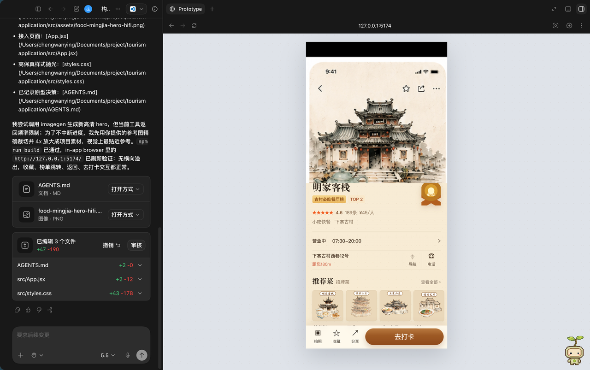
第二步：让 Codex 生成交互低保真
拿到界面图后，不要急着做高保真。先让 Codex 把页面拆成可以点击、可以滚动、能看流程的低保真页面。
请根据我上传的 UI 截图，先做一个低保真交互原型。
要求：
1. 保留截图里的页面结构和主要模块。
2. 用 HTML/CSS/JS 做出可以点击的关键交互。
3. 先不要追求像素级还原，重点是把页面流程跑通。
4. 做完后请在浏览器里打开检查，并告诉我哪些地方还需要补素材。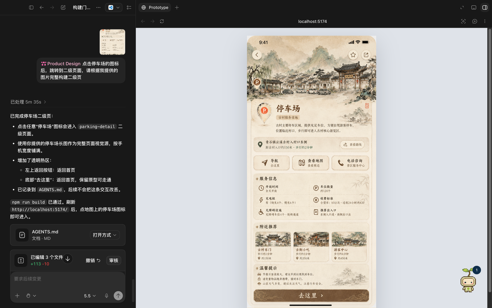
第三步：补齐图片和图标
低保真跑通后，再回到 image2 生成图片、图标、插画等素材。这样做的好处是：你不会一开始就陷进细节，而是先确认页面真的能用。
请根据当前页面，列出还缺哪些图片、图标和状态图。
按这个格式输出：
- 素材名称
- 用在页面哪里
- 尺寸比例
- 风格要求
- 给 image2 的生成提示词第四步：高保真页面完善
素材齐了以后，再让 Codex 做高保真页面。这里要明确告诉它：不要只把图片贴进去，要把页面结构、间距、按钮、卡片和状态都做成真实 UI。
请基于当前低保真页面和新增素材，完善成高保真页面。
要求：
1. 保留原产品的视觉语言。
2. 图片、图标和文字都要放在正确位置。
3. 桌面端和移动端都要检查。
4. 不要让图片压住文字，不要出现横向滚动。
5. 做完后用浏览器截图检查，并列出还需要调整的地方。第五步：输出 Figma 源文件
最后一步才是 Figma。让 Codex 调用 Figma MCP，把已经验证过的页面结构输出到 Figma，而不是一开始就盲目生成设计稿。
请使用 Figma MCP，把当前高保真页面整理成 Figma 设计文件。
要求：
1. 页面结构要分层清楚。
2. 按导航、内容区、卡片、按钮、弹窗等模块命名。
3. 图片素材要放到对应位置。
4. 保留后续可编辑性，不要只导入一张整图。
5. 完成后给我 Figma 链接，并说明每个主要 Frame 的用途。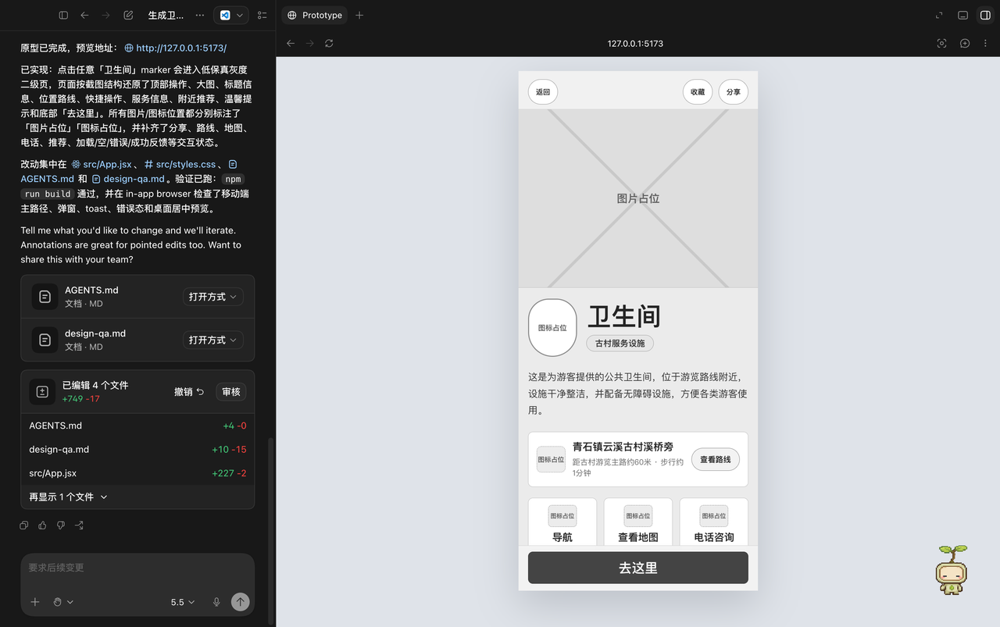
验收清单
- 不是一张死图，页面结构可以继续编辑。
- 低保真阶段已经跑通过主要交互。
- 图片和图标都有明确用途，不是随便装饰。
- 高保真页面没有文字遮挡、图片变形、布局溢出。
- Figma 文件分层清楚，后续能继续改。
description: "Agent 智能客服完整案例拆解：把客服流程拆成知识库、意图识别、回答生成和人工兜底。"
10.12 Codex × Agent 智能客服：把客服流程拆成可落地任务
这个案例来自飞书里的 Agent 智能客服资料。它适合学习一件事：不要一上来就说“我要做一个智能客服”，而是把客服流程拆成几个能检查、能演示、能迭代的小模块。
智能客服不是简单替人聊天。一个能用的客服 Agent 至少要做到：听懂用户在问什么、知道去哪里找依据、回答时不要乱编、遇到解决不了的问题能转人工、最后还能留下记录方便复盘。
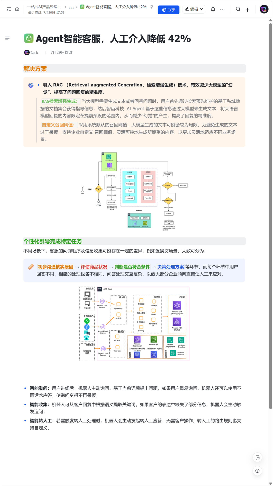
这个案例真正学什么
- 把“客服”拆成标准问答、多轮追问、知识检索、答案生成、转人工和数据记录。
- 让 Codex 先画流程，再写页面或原型，不要直接做一个大系统。
- 学会设计兜底：不知道就说不知道，不能解决就转人工，不要强行回答。
- 学会验收客服 Agent：不是看它会不会聊天，而是看它能不能稳定解决问题。
最小可做版本
先别做全渠道客服，也别接真实账号。最小版本只做一个小场景，比如“售后问题查询”或“课程资料领取”。
| 模块 | 做什么 | 新手怎么理解 |
|---|---|---|
| 用户入口 | 用户输入问题 | 一个聊天框就够 |
| 意图识别 | 判断用户想问什么 | 是查进度、问规则，还是投诉 |
| 知识库 | 放标准答案和规则 | 可以先用一张表格代替 |
| 回答生成 | 根据知识库组织答案 | 必须说明依据来自哪里 |
| 追问补全 | 信息不够时继续问 | 比如缺订单号、手机号、时间 |
| 人工兜底 | 解决不了就交给人 | 不要让 AI 硬答 |
| 日志记录 | 记录问题和处理结果 | 后面才能优化知识库 |
照着做
- 先选一个很小的客服场景。不要写“做智能客服”，要写“处理售后进度查询”。
- 列出 20 个真实问题，按类型分组：规则类、进度类、异常类、投诉类。
- 把答案整理成知识表：问题类型、需要的信息、标准答案、不能自动处理的情况。
- 让 Codex 画流程图：用户提问以后，先判断意图，再决定回答、追问或转人工。
- 让 Codex 做一个低保真页面：一个聊天框、一个知识库表、一个日志区。
- 用 8 到 10 个测试问题去试：正常问题、信息缺失、问错领域、情绪化投诉都要测。
- 最后让 Codex 自己复查：有没有乱编、有没有越权、有没有该转人工却没转。
可以直接复制的提示词
请帮我设计一个智能客服 Agent 的最小可用原型。场景是：[填写具体场景，例如售后进度查询]。
请先不要写完整系统，按下面顺序输出：
1. 用户会问的 20 个典型问题，并按意图分类。
2. 每类问题需要哪些信息，信息不够时应该怎么追问。
3. 知识库表格字段：问题类型、标准答案、依据、不能自动处理的情况。
4. 客服 Agent 的流程图：用户提问 → 意图识别 → 查知识库 → 生成回答 → 追问/转人工 → 记录日志。
5. 一个可以演示的低保真页面方案。
6. 10 条测试用例，用来检查它会不会乱答。
要求：不知道就说不知道；没有依据不能编；高风险或投诉类问题必须转人工。验收清单
- 能说清楚这个客服 Agent 服务谁、解决哪一类问题。
- 至少有 4 类问题意图，不是所有问题都走同一条回答。
- 每个回答都能追到知识库依据。
- 信息不够时会追问，不会直接编答案。
- 有“无法处理”和“转人工”的规则。
- 有测试问题和日志记录，后续能继续优化。
练习任务
拿你自己的一个业务场景练：比如资料领取、售后进度、活动规则、内部制度问答。只做一个场景，不要贪多。做完后让 Codex 用“正常问题、缺信息问题、超范围问题、情绪化问题”各测 2 条。
description: "AI Agent 系统架构完整案例拆解：先画清楚角色、工具、记忆、权限和日志，再开发。"
10.13 Codex × Agent 系统架构：先画清楚再开发
这个案例来自飞书里的 AI Agent 系统架构设计资料。它适合解决一个很常见的问题：很多人一想到 Agent，就开始堆模型、工具、插件和自动化，最后系统看起来很厉害，但谁也说不清它到底怎么工作。
正确做法是先画架构，再写代码。架构不是为了显得专业，而是为了让你知道：用户从哪里进来，模型什么时候判断，工具什么时候执行，哪些地方必须人工确认，失败以后怎么办。
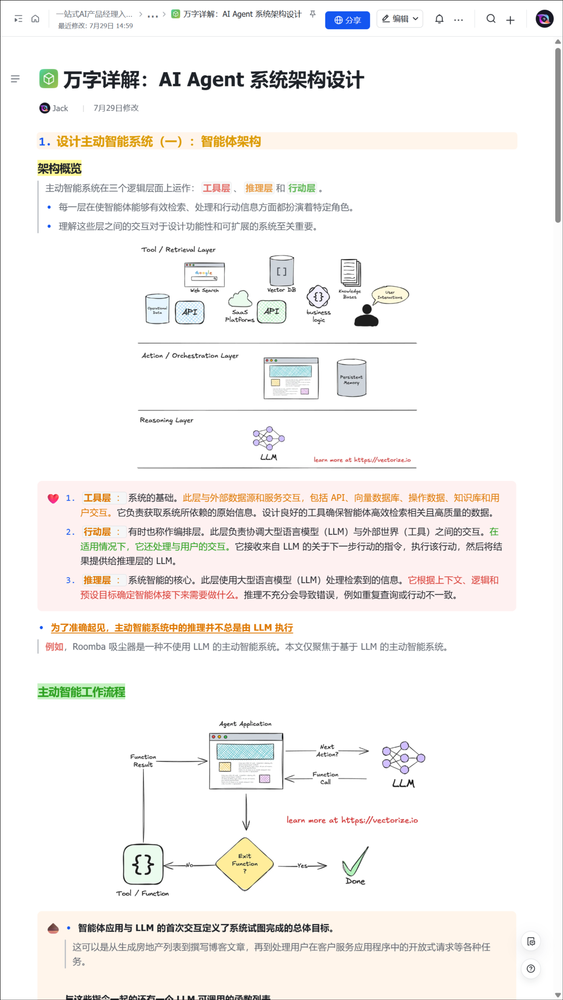
这个案例真正学什么
- Agent 系统不只是一个模型，通常还包括任务编排、工具调用、知识库、记忆、权限、日志和人工复核。
- 架构图要先服务理解，不要为了复杂而复杂。
- 每个工具都要写边界：能做什么、不能做什么、什么时候必须停下来问人。
- 一个好架构必须能解释失败情况，而不是只画成功流程。
一张简单架构应该包含什么
| 部分 | 作用 | 新手检查方式 |
|---|---|---|
| 用户入口 | 接收任务 | 聊天框、表单、网页入口都可以 |
| 任务理解 | 把用户话拆成目标和约束 | Codex 先复述任务 |
| 任务编排 | 决定先做什么、后做什么 | 输出步骤清单 |
| 工具层 | 执行搜索、读文件、写文件、生成图等动作 | 每个工具有权限边界 |
| 知识库 | 提供依据 | 回答能引用来源 |
| 记忆/上下文 | 保存本次任务需要的信息 | 不要保存敏感信息 |
| 人工确认 | 高风险动作前停下来 | 写入、删除、发布前确认 |
| 日志 | 留下执行记录 | 方便复盘和追责 |
照着做
- 先写一句话场景：这个 Agent 帮谁，在什么情况下，完成什么任务。
- 列出输入和输出：用户给它什么，它最后交付什么。
- 列工具清单：读资料、查网页、生成页面、写文档、发布网站，每个工具单独写边界。
- 画主流程：接收任务 → 拆解任务 → 选择工具 → 执行 → 检查 → 交付。
- 画失败流程：资料缺失、权限不够、工具失败、结果不可信时分别怎么办。
- 标出人工确认点：删除文件、发布线上、连接账号、发送消息等动作必须停下来。
- 最后让 Codex 把架构变成一页说明文档，让别人看得懂。
可以直接复制的提示词
请帮我设计一个 AI Agent 的系统架构。场景是：[填写你的业务场景]。
请按下面格式输出：
1. 这个 Agent 的用户是谁，它解决什么问题。
2. 输入是什么，输出是什么。
3. 模块清单：用户入口、任务理解、任务编排、工具层、知识库、记忆、人工确认、日志。
4. 每个模块的职责、输入、输出和失败情况。
5. 一张从用户发起任务到最终交付的流程图。
6. 哪些动作必须人工确认，为什么。
7. 最小可用版本先做哪些，后续版本再加哪些。
要求：架构要能给非技术读者看懂，不要堆概念；每个工具都要写清楚边界。验收清单
- 读者能一眼看懂 Agent 的工作流。
- 有成功流程，也有失败流程。
- 工具不是随便堆的，每个工具都有用途和边界。
- 明确哪些动作不能自动执行。
- 有日志和复盘机制。
- 可以从架构直接拆出第一版开发任务。
练习任务
选一个你熟悉的任务，比如“自动整理会议纪要”“整理网站教程”“批量检查页面问题”。让 Codex 先画架构，不写代码。你只看一件事：如果某一步失败，它有没有下一步处理办法。
description: "LLM Agent 量化投资案例拆解：把高风险场景拆成研究助手、回测草稿和风险复核。"
10.14 Codex × LLM Agent 量化投资：把复杂流程拆成研究助手
这个案例来自飞书里的“基于 LLM 的 Agent 在量化投资中的应用”。它适合学习高风险场景怎么用 Agent：不是让 AI 直接替你做决策，而是让它做研究辅助、资料整理、策略说明、回测脚本草稿和风险检查。
量化投资这类场景一定要小心。Agent 可以帮你整理逻辑，但不能替你保证收益，更不能直接给买卖建议。页面里要把“人工复核”和“风险提示”放在非常明显的位置。
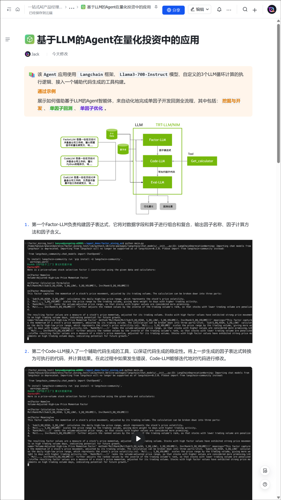
这个案例真正学什么
- 高风险任务要把 Agent 放在“研究助手”位置，不要放在“最终决策者”位置。
- 所有数据来源、假设、指标口径都要写清楚。
- 回测结果只能说明历史表现，不能代表未来结果。
- 每个输出都要带风险提示和人工复核节点。
最小可做版本
不要一开始做自动交易。最小版本可以只做“策略研究助手”。它接收一个策略想法，然后输出研究框架、需要的数据、指标解释、回测脚本草稿和风险清单。
| 模块 | 做什么 | 不能做什么 |
|---|---|---|
| 策略理解 | 把用户想法拆成可研究假设 | 不能直接判断一定赚钱 |
| 数据清单 | 列出需要哪些字段 | 不能伪造数据来源 |
| 指标解释 | 解释收益、回撤、波动等指标 | 不能只报好看的指标 |
| 回测草稿 | 生成可检查的脚本思路 | 不能直接连真实交易 |
| 风险复核 | 列出过拟合、样本偏差、成本影响 | 不能省略风险提示 |
| 人工确认 | 让人确认假设和结果 | 不能自动做最终决策 |
照着做
- 先写一个策略想法，比如“研究某类指标是否和后续收益有关”。
- 让 Codex 先把它改写成研究假设，而不是直接写代码。
- 让 Codex 列数据字段：时间、标的、价格、成交量、指标、成本、样本范围。
- 让 Codex 生成回测流程，不要先追求复杂模型。
- 让 Codex 输出风险清单：数据偏差、幸存者偏差、过拟合、交易成本、样本太短。
- 最后让 Codex 写“这份结果不能说明什么”，逼它说清楚边界。
可以直接复制的提示词
请把“量化投资研究助手”拆成一个安全的 Agent 工作流。
策略想法是：[填写你的策略想法]。
要求：
1. 只做资料整理、指标解释、策略草稿和回测脚本建议。
2. 不给买卖建议，不做收益承诺，不连接真实交易。
3. 输出研究假设、所需数据字段、回测步骤、关键指标、风险清单和人工复核点。
4. 如果数据不足，请明确说明不能得出结论。
5. 最后写一段“这份结果不能说明什么”。验收清单
- 没有任何“应该买/应该卖”的结论。
- 所有数据来源和假设都写清楚。
- 有回测口径，不只是一段策略描述。
- 有风险清单，而且不是一句空话。
- 明确要求人工复核。
- 结果里能看到“不确定性”和“不能证明什么”。
练习任务
让 Codex 把一个策略想法改成研究计划，不要让它直接输出结论。你可以要求它把最终结果分成三栏：能证明什么、不能证明什么、下一步要补什么数据。
description: "SQL-Agent 完整案例拆解：把自然语言问题变成可解释、可检查、只读优先的 SQL。"
10.15 Codex × SQL-Agent：把自然语言变成可检查 SQL
这个案例来自飞书里的“SQL-Agent：实现 SQL 生成、翻译”。它适合学习一个非常实用的 Agent 场景：用户用自然语言提问，Agent 根据表结构生成 SQL，再解释查询逻辑，让人确认后执行。
重点不是让 AI 直接连数据库乱查，而是让它先读懂表结构、复述问题、选择字段、生成 SQL、解释 SQL、列出风险。尤其涉及真实数据时，必须只读优先，最好先在测试库或样例数据里跑。
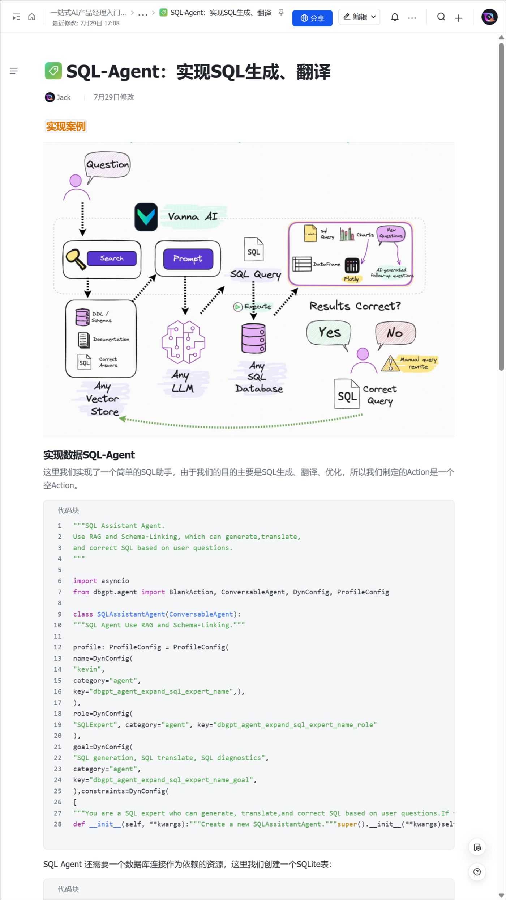
这个案例真正学什么
- SQL-Agent 的核心不是“会写 SQL”，而是“写出来能解释、能检查、能限制风险”。
- 表结构比提示词更重要。不给字段说明，Agent 很容易猜表名和字段。
- 生成 SQL 之后必须解释：用了哪些表、为什么这么 join、where 条件是什么。
- 默认只读，不做删除、更新、写入类操作。
最小可做版本
准备三样东西就能练：一段自然语言问题、一份表结构说明、一组样例数据。先不要连接真实业务库。
| 步骤 | Agent 要做什么 | 人要检查什么 |
|---|---|---|
| 复述问题 | 把自然语言改写成查询目标 | 有没有理解错 |
| 选择表字段 | 说明需要哪些表和字段 | 有没有猜不存在的字段 |
| 生成 SQL | 写出查询语句 | 是否只读、是否加限制 |
| 解释 SQL | 解释 join、where、group by | 逻辑是否合理 |
| 风险提示 | 标出可能不准的地方 | 口径是否缺失 |
| 执行前确认 | 等人确认后再跑 | 不自动碰生产库 |
照着做
- 先整理表结构。每张表至少写：表名、字段名、字段含义、主键、常见关联字段。
- 写一个自然语言问题，比如“统计最近 30 天每个渠道的新增用户数”。
- 让 Codex 先复述问题，确认它理解的是不是你想要的口径。
- 让 Codex 选择表和字段，并说明为什么选它们。
- 让 Codex 生成 SQL，但要求默认加 limit 或时间范围。
- 让 Codex 解释 SQL，并列出不确定字段和需要人工确认的口径。
- 最后才在测试库或样例数据上执行。
可以直接复制的提示词
请设计一个 SQL-Agent 的练习流程。输入包括：
1. 数据库表结构：[粘贴表名、字段、含义、关联关系]
2. 用户问题：[粘贴自然语言问题]
请按下面顺序输出：
1. 先复述用户真正想查什么。
2. 选择需要用到的表和字段，并解释原因。
3. 如果口径不明确，先提出澄清问题。
4. 生成只读 SQL，默认不要写入、更新或删除数据。
5. 逐行解释 SQL 逻辑。
6. 列出执行前需要人工确认的风险。
7. 给 3 条测试问题，检查 SQL-Agent 有没有乱猜字段。
注意：不要连接生产数据库，不要编造不存在的字段。验收清单
- SQL 之前先复述了问题。
- 没有使用表结构里不存在的字段。
- SQL 是只读查询。
- 有时间范围、limit 或样例数据限制。
- 解释了 join、where、group by 的原因。
- 对不确定口径提出了问题，而不是硬写。
练习任务
随便设计两张表：用户表和订单表。让 Codex 根据“最近 7 天复购用户数”生成 SQL。重点检查它有没有先问清楚“复购”的定义。
description: "商用 AI Agent 完整案例拆解：从 0 到 1 做一个能接任务、调工具、交付结果的小闭环。"
10.16 Codex × 商用 AI Agent：从 0 到 1 做最小闭环
这个案例来自飞书里的“从 0-1 打造商用 AI Agent”。它适合学习商业化 Agent 的入门路径：不要一开始就做一个“大而全智能体”，先做一个能接收任务、调用工具、返回结果、记录日志、失败兜底的小闭环。
商用 Agent 最重要的不是炫技，而是稳定交付。用户给它一个明确任务，它能一步步处理，处理不了也能说清楚原因，并把过程留痕。
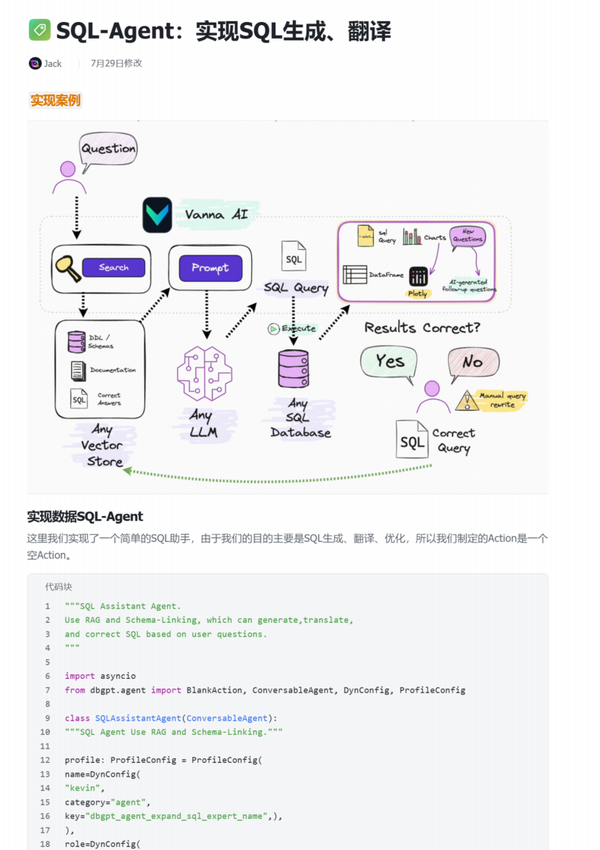
这个案例真正学什么
- 从真实任务出发，而不是从工具出发。
- 第一版只做一个小闭环：输入、处理、输出、验收、记录。
- 工具越多，越要写权限和失败兜底。
- 商用场景必须能复盘：为什么这么做、哪里失败、谁确认过。
最小闭环长什么样
| 环节 | 要回答的问题 | 示例 |
|---|---|---|
| 用户是谁 | 谁会用它 | 运营、设计、内容、客服 |
| 任务是什么 | 它重复帮人做哪件事 | 整理资料、生成页面、检查表格 |
| 输入是什么 | 用户要给什么材料 | 文档、截图、表格、链接 |
| 工具是什么 | Agent 需要哪些能力 | 读文件、浏览网页、生成文档、检查结果 |
| 输出是什么 | 最后交付什么 | 页面、报告、清单、表格 |
| 验收是什么 | 怎样算完成 | 可打开、可复核、无缺图、无错链 |
| 失败怎么办 | 做不了时怎么处理 | 提示缺材料、转人工、暂停等待确认 |
照着做
- 先找一个重复任务。不要选“管理全部业务”，选“把一篇教程整理成网页”这种小任务。
- 写清楚输入材料：用户给链接、文档、截图，还是表格。
- 写清楚交付物：最终要一个网页、一份表格，还是一个文档。
- 让 Codex 拆流程：读取材料 → 提取结构 → 生成初稿 → 插入图片 → 检查 → 发布。
- 让 Codex 标出人工确认点：用外部素材、发布线上、修改原文、删除内容。
- 做一个最小演示版本，只服务一个任务，不要一口气做平台。
- 用真实材料跑一遍，记录失败点，再迭代第二版。
可以直接复制的提示词
请帮我把一个商用 AI Agent 从 0 到 1 拆成最小闭环。
业务场景是：[填写具体场景]
目标用户是：[填写谁来用]
输入材料是：[填写文档、截图、链接、表格等]
最后交付物是：[填写网页、报告、表格、清单等]
请输出：
1. 这个 Agent 只解决哪一个重复任务。
2. 用户需要提供哪些输入。
3. Agent 每一步怎么处理。
4. 需要调用哪些工具，每个工具的边界是什么。
5. 哪些地方必须人工确认。
6. 失败时怎么兜底。
7. 第一版最小可用原型怎么做。
8. 验收标准和测试用例。
要求：不要做大而全系统；先做一个能演示、能复盘、能继续迭代的小闭环。验收清单
- 任务足够小，一句话能说清楚。
- 输入、处理、输出都有明确格式。
- 工具调用有边界，不是什么都自动做。
- 有人工确认点。
- 有日志或过程记录。
- 有失败兜底，不会卡住也不会乱交付。
- 第一版可以用真实材料跑一遍。
练习任务
把你现在最常重复的一件事写出来，比如“把资料整理成教程页”“把截图改成网页”“把会议内容整理成执行清单”。让 Codex 只做这一个任务的最小闭环，不要做平台。
11 进阶学习路线：真实场景怎么练
这一章只做一件事：把零散资料变成你能照着练的路线。你不用跳来跳去看一堆材料，先按下面顺序练。
11.1 先把资料变成学习路线
很多 Codex 资料看起来都很精彩，但新手最容易卡在一个地方：收藏了一堆内容，真正动手时还是不知道从哪开始。
更稳的顺序是：
- 先跑通一个小任务，确认 Codex 能理解、执行、交付。
- 再学界面和权限，知道左边、中间、右边分别代表什么。
- 遇到卡住时，先排任务、权限、网络和代理，不要只喊继续。
- 再看案例：办公四件套、网站、文章、App 审核、自动化。
- 高频使用以后，再做长期记忆系统。
- 真正需要自动化时，再学 Computer Use、Playwright、浏览器检查。
可以直接复制给 Codex：
请把这批学习资料整理成一条 Codex 学习路线。
要求：
1. 先筛掉和我当前学习无关的内容。
2. 把剩下内容按“先上手、再排错、再做项目、最后进阶”排序。
3. 每条内容都要说明：它解决什么问题、适合谁、我该怎么练。
4. 不要只总结原文，要改成我能照着做的步骤。
5. 最后给我一张“先读什么、后读什么”的清单。验收标准很简单：你看完以后，知道今天先做哪一个小任务，而不是又多收藏了十几个网页。
11.2 第一次上手 Codex App
新手第一天不要试图把所有按钮都记住。你先理解三块就够：
| 区域 | 大白话 | 你第一天要做什么 |
|---|---|---|
| 左边 | 找入口、找项目、切换对话 | 新建一个对话或项目 |
| 中间 | 你真正发需求的地方 | 把目标、材料、限制说清楚 |
| 右边 | 结果、预览、代码变化 | 看它到底改了什么、生成了什么 |
先看界面分区：左边找入口，中间说需求，右边看产物和变化。
适合第一天练的小任务：
我是第一次用 Codex。请你带我完成一个小任务。
任务：[例如：整理这个文件夹里的 3 张图片，并生成一个说明文档]
材料位置：[填写本机文件夹路径]
请按顺序做：
1. 先解释你理解的任务。
2. 告诉我你要读取哪些文件。
3. 如果需要权限，先说明为什么需要。
4. 开始执行。
5. 做完后给我文件路径和检查结果。
不要删除原文件，不要改和任务无关的内容。Codex 不是普通聊天框，它是能读文件、开浏览器、生成网页、改代码、调用工具的工作台。所以你要养成两个习惯：
- 给材料：文件、截图、网页、目标样式。
- 给验收：做完怎么算成功，哪些地方不能碰。
如果你想看更完整的入门顺序，可以按这几个关键词自查：
- 一、Codex App 到底是什么
- 三、本地 Codex App、云端 Codex、普通 ChatGPT 有什么区别
- 四、主界面地图：左边、中间、右边
- 五、左侧导航栏：你从这里进入不同工作流
- 六、搜索：找回你之前做过的事
11.3 卡住、连不上、reconnecting 怎么排
如果新对话出现 reconnecting 多次才返回，不要只配 HTTP 代理。还要注意 WebSocket 连接，也就是 WSS_PROXY 和 WS_PROXY。另外，Codex Desktop 从图形界面启动时，也要能继承这些环境变量。
普通读者不用一上来研究命令。先按这个顺序判断：
| 现象 | 先做什么 |
|---|---|
| 页面一直 reconnecting | 先完全退出 Codex，再重新打开 |
| 只有网页能连，Codex 不行 | 检查 Codex 是否吃到代理环境 |
| 普通请求能走，新对话卡住 | 检查 WebSocket 代理：WSS_PROXY / WS_PROXY |
| 改了代理还是旧样子 | 可能旧进程没退出，只关窗口不算 |
可以直接复制：
请帮我排查 Codex reconnecting 问题。
已知现象：
1. 新对话经常 reconnecting 多次。
2. 我可能只配置了 HTTP_PROXY / HTTPS_PROXY。
请你检查：
1. 当前环境里有没有 HTTP_PROXY、HTTPS_PROXY、ALL_PROXY。
2. 有没有 WSS_PROXY、WS_PROXY。
3. Codex Desktop 图形应用启动环境是否能继承这些变量。
4. 需要完全退出重启的地方请明确提醒。
不要直接乱改配置。先列检查结果，再给我最小修改方案。温馨提示：这里的重点不是背命令，而是知道 Codex 有些连接走 WebSocket。只配普通 HTTP 代理，可能还不够。
11.4 从案例里学实战
案例很多：办公四件套、PPT、3D 视频、网站、自媒体长教程、电商自动化、App 审核。你不要把它们当成炫技内容，要当成练习题。
案例不是拿来收藏的，重点看输入、执行、检查和交付物。
最适合新手先练的是办公四件套，因为低风险、结果可见：
请在当前对话里做一个办公四件套演示任务。
主题：《Codex 内容生产工作流》
要求：
1. 生成 Word 文档、PDF 文件、PPTX 演示稿、XLSX 表格四类真实文件。
2. 每个文件都要有实际内容，不要空文件。
3. 生成后告诉我每个文件的真实路径。
4. 最后给出验收清单，确认四个文件都存在、能打开、不是占位内容。如果你想把案例迁移到自己的业务，按这个模板问：
请把这个案例改成我的练习任务。
原案例：[办公四件套 / 网站 / 图文教程 / App 审核 / 自动化]
我的业务：[填写你的业务]
请输出：
1. 这个案例真正解决的问题。
2. 我可以复用的部分。
3. 第一版最小任务。
4. 我需要准备的材料。
5. Codex 执行步骤。
6. 做完怎么验收。
7. 哪些步骤必须人工确认。这些案例里真正有用的不是标题，而是拆任务的方法：
- 一、牛马打工人必备：用 Codex 做 Word、PDF、PPT、Sheets 四件套
- 路线一：图片型 PPT
- 路线二：HTML 型 PPT
- 二、手搓酷炫 3D 视频：Codex + HyperFrames / Remotion 做《国产动画十大电影》
- 三、早起早睡身体好：一条提示词做网站，并部署到 Vercel
- 四、自媒体人必备：用 Codex 制作图文长教程
11.5 从 0 到 1 做项目和 Agent
做项目时，最重要的不是某个平台，而是这条开发顺序：
- 先用问答方式和 Codex 对齐产品。
- 写 PRD 文档。
- 把 PRD 拆成多个
Plan.md。 - 用目标模式或明确目标提示词，让 Codex 一轮一轮执行。
- 每轮结束后整合成
consolidation.md。 - 再进入下一轮开发。
- 本地跑通后，再考虑部署上线。
对小白来说，可以改成更容易执行的版本：
我要从 0 到 1 做一个小项目。请不要直接开写。
项目想法：[填写一句话]
目标用户：[谁会用]
第一版只解决：[一个最小问题]
请你先问我 8 个问题，把需求问清楚。
然后输出：
1. PRD 草稿
2. 第一版功能清单
3. 不做什么
4. 页面或流程结构
5. Plan.md 拆分
6. 第一轮只执行哪个 Plan
7. 本地验收方式如果项目是网站或内部工具，先追求“能被别人打开、看懂、使用”，不要一上来追求完整系统。
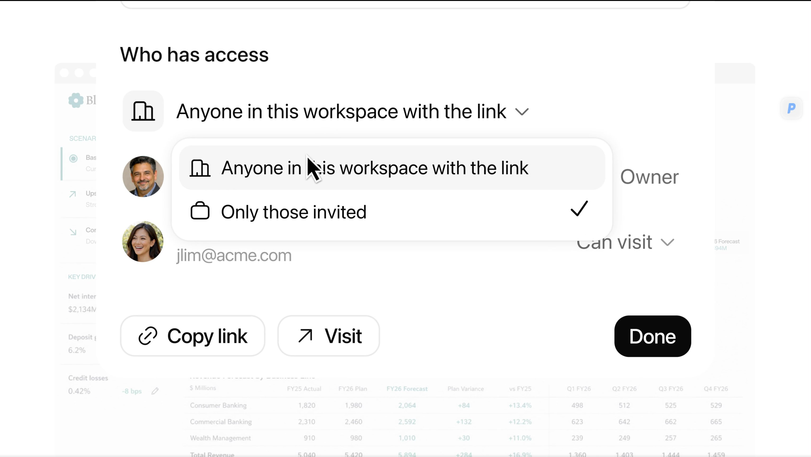
做网站或内部工具时，第一版要能打开、能看懂、能给别人验证。
11.6 长期记忆系统
当你频繁使用 Codex，最烦的是每次都要重新解释：项目路径、写作风格、不要做什么、上次验证结论。长期记忆系统的核心思想可以压缩成三句话：
- Markdown 是唯一正式事实源，方便人看、修改、搜索、做 Git diff。
- SQLite 只做状态层和索引层，不要变成唯一事实源。
- 每次任务开始不要全量读取，只读
AGENTS.md、INDEX.md，再按关键词读 1-3 个相关文件。
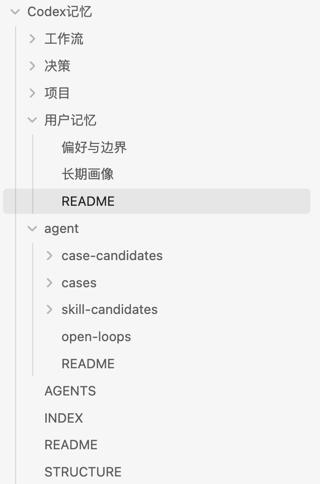
先用 Markdown 保存长期有效信息，等资料多了再考虑索引和向量检索。
新手先建这个最小版本就够：
Codex记忆/
AGENTS.md
INDEX.md
用户记忆/
偏好与边界.md
项目/
当前项目.md
工作流/
常用检查清单.md
决策/
重要取舍.md
agent/
open-loops.md可以直接复制：
请帮我在本机搭建一套最小可用的 Codex 长期记忆系统。
目标不是保存聊天记录，而是保存以后会复用的信息。
要求：
1. Markdown 是正式事实源。
2. 不保存 API Key、Token、Cookie、密码、身份证、银行卡。
3. 不保存完整聊天流水账。
4. 每次重要任务开始，只先读 AGENTS.md 和 INDEX.md。
5. 根据任务关键词，只读最相关的 1-3 个文件。
6. 任务结束前做 memory closeout，判断是否要更新记忆。
请先创建目录和基础文件，再告诉我每个文件是干什么的。什么时候再升级 SQLite / 向量检索？
| 情况 | 要不要升级 |
|---|---|
| 只有几个项目、几十条记忆 | 不需要，Markdown 足够 |
| 文件越来越多，关键词找不准 | 可以考虑 SQLite 索引 |
| 你问的是意思相近但词不一样的问题 | 可以考虑 EmbeddingGemma + Zvec |
| 涉及当前价格、政策、接口能力 | 不要只信记忆，必须重新核验 |
11.7 插件、浏览器和电脑操控
先别一上来装一堆能力。你先判断任务到底需要什么：
| 工具 | 适合做什么 | 新手怎么用 |
|---|---|---|
| Computer Use | 操作桌面软件、看屏幕、处理没有接口的流程 | 只做低风险、可回退的任务 |
| Playwright | 操作网页、自动点击、检查页面 | 用来测网站和网页流程 |
| Gmail / Drive / GitHub | 读取资料、处理仓库、整理文件 | 先只读，再让人确认 |
| Remotion / HyperFrames | 做动画视频 | 有明确脚本后再用 |
| Vercel / Sites | 分享网站或应用 | 做完后给别人打开验证 |
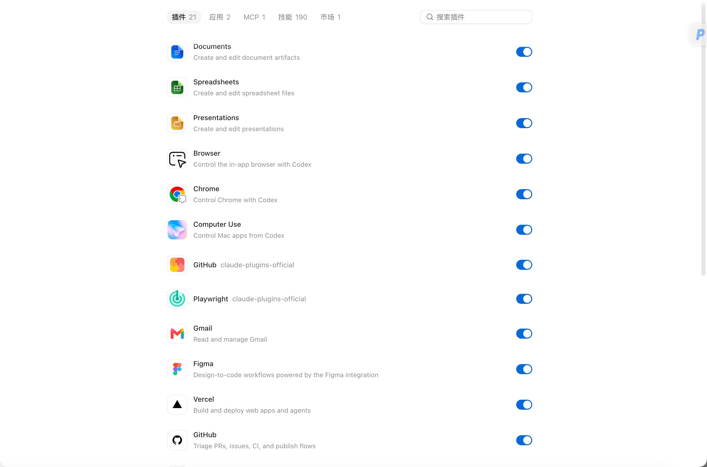
先判断任务该用浏览器、Playwright 还是 Computer Use，不要一上来装一堆能力。
Computer Use 适合截图打码、下载工具、上传材料、整理网页、做端到端测试、处理 Obsidian、做审核流程。你真正要学的是判断边界：
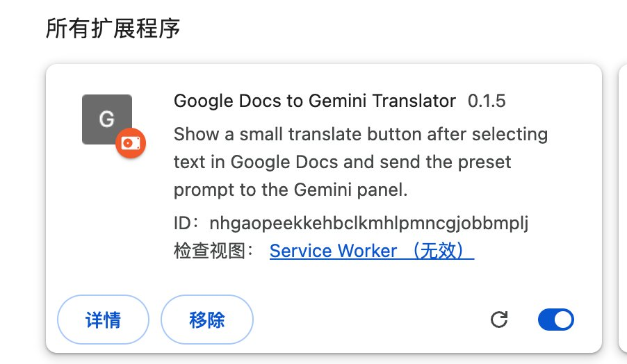
它适合看屏幕和操作桌面软件，但涉及付款、发布、删除时必须人工确认。
请帮我判断这个任务该用哪种工具。
任务：[填写任务]
涉及页面或软件：[填写]
是否需要账号状态：[是/否]
是否涉及付款、删除、发布、隐私数据：[是/否]
请输出：
1. 适合普通浏览器、Playwright，还是 Computer Use。
2. 为什么。
3. 哪些步骤必须我人工确认。
4. 最低风险执行方案。
5. 做完怎么截图或验收。温馨提示：Computer Use 最容易浪费时间和额度。能让人 10 秒完成的上传、拖拽、选择文件，不一定值得让它慢慢点。
11.8 信息流、微信飞书和资料归档
很实用的方向是：让 Codex 整理微信群消息、飞书资料和各平台数据，最后变成日报、销售推进、精选资料、待办清单。
这不是让 Codex 替你乱发消息，而是让它先做“只读整理”。
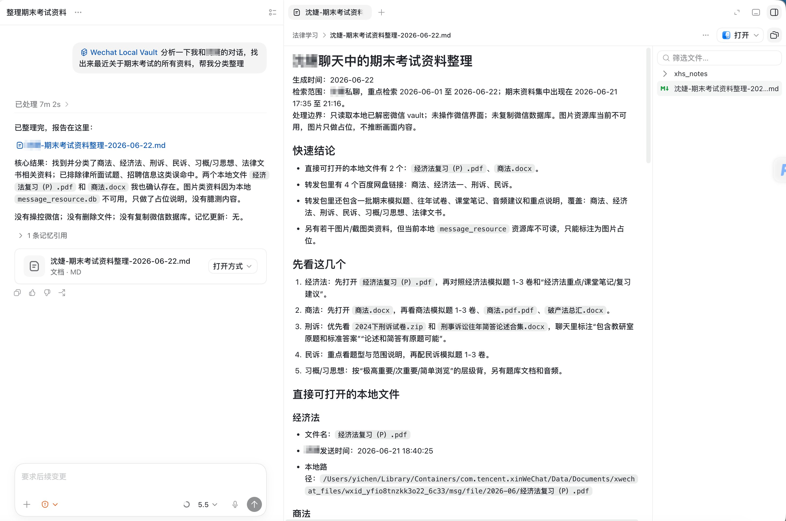
先筛选、归类、提炼，再由人决定是否发送或归档。
可以直接复制：
请帮我整理这批消息和资料，但不要发送、不要删除、不要修改原始内容。
资料位置：[粘贴文本 / 文件夹 / 导出的聊天记录]
请输出：
1. 重要消息摘要
2. 需要我回复的人和事项
3. 可以归档的资料
4. 待办清单
5. 风险或不确定信息
6. 需要人工确认的地方验收时看三件事：
- 有没有漏掉关键人名、时间、金额、交付物。
- 有没有把猜测当事实。
- 有没有明确哪些内容需要你确认。
11.9 App 审核、备案和上架材料
理论上 Codex 可以帮你跑备案和审核流程，但有些动作人手更快，比如上传压缩包、上传截图、输入路径。这里不要把“全自动”当目标。
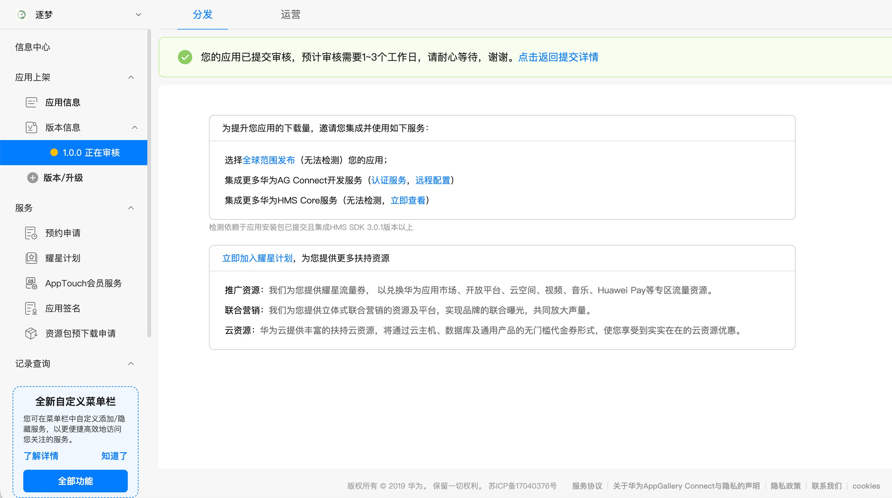
审核类任务重点是材料清单、反馈拆解、重新提交前检查。
更稳的做法是让 Codex 做三件事：
- 整理材料清单。
- 把平台反馈拆成待办。
- 重新提交前做检查表。
请帮我整理这次 App 审核反馈。
平台：[填写平台]
反馈原文：[粘贴反馈]
项目材料位置：[填写文件夹路径]
请输出：
1. 平台指出了哪些问题。
2. 每个问题对应要改哪个材料。
3. 哪些可以由你直接整理。
4. 哪些必须我人工判断。
5. 重新提交前检查清单。
不要自动提交，不要删除原文件。记住：收藏资料不等于学会。能照着做、做完能检查、下次能复用，才算真的学到。
12 最后检查
读完不等于学会。真正有用的标准是：你能把自己的一个小任务交给 Codex，它做完后你也能检查对不对。
结束前用这个清单检查一遍：
- 我能用一句话说清楚目标。
- 我知道要给 Codex 哪些材料。
- 我写了不能动的范围。
- 我写了做完怎么验收。
- 我知道卡住时先排哪几个问题。
你可以把这句话当成结尾固定模板：
请不要只说完成。
请告诉我：你改了什么、怎么检查、还有什么需要我人工确认。